Unit 1 Module 4
GEOG246-346
2026-09-02 Back to home
Source:vignettes/unit1-module4.Rmd
unit1-module4.RmdData analysis and visualization
We are now moving onto the final module of this unit. We’ll learn now
about manipulating, analyzing, and visualizing data. We’ll start working
with tidyverse tools more now.
For this module we will be using the following packages:
We will start making extensive use of %>% (the pipe
operator). You will save yourself much time by using the keyboard
shortcut for inserting that operator, which is
CMD + shift + m on a Mac, ctrl + shift + m on
Windows. You will wear your fingers out typing the three characters out
each time (and also not get the automatic space on either side).
Data preparation
The first thing we need is some data to work with. R comes with many
built-in datasets, but when you are out in the wild and working on your
own with R, you are generally going to get your datasets
from somewhere else. That means that you will need to read them into
R. Once you have read them in, you will often need to clean
them up and rearrange them before they are ready to analyze. This
section focuses on reading in and organizing your data in
R. We are going to work with files in the commonly used csv
data format.
Reading in and writing out data
We are going to work with three csv files that I downloaded from FAOStat, one of the
primary sources for agricultural census data. The data I downloaded
represent the planted areas and harvest quantities of maize, wheat, and
sorghum for the years 1961-2017 for Zambia and South Africa. They are
bundled up here with geospaar, so you can access them by
reading them in as system.files.
We can easily read in each file using base R’s
read.csv function, which is widely used. However, we are
going to skip straight to a more powerful csv reader provided by the
tidyverse’s readr package. Even
more powerful is data.table::fread, which is excellent (and
as far as I know, still the fastest on the market) for reading in very
large csv files, but we are sticking with the tidyverse. First, for
grins, here is how you would use read.csv
f <- system.file("extdata/FAOSTAT_maize.csv", package = "geospaar")
maize <- read.csv(f)
head(maize)
#> Domain.Code Domain Area.Code Area Element.Code Element Item.Code Item Year.Code
#> 1 QC Crops 202 South Africa 5312 Area harvested 56 Maize 1961
#> 2 QC Crops 202 South Africa 5312 Area harvested 56 Maize 1962
#> 3 QC Crops 202 South Africa 5312 Area harvested 56 Maize 1963
#> 4 QC Crops 202 South Africa 5312 Area harvested 56 Maize 1964
#> 5 QC Crops 202 South Africa 5312 Area harvested 56 Maize 1965
#> 6 QC Crops 202 South Africa 5312 Area harvested 56 Maize 1966
#> Year Unit Value Flag Flag.Description
#> 1 1961 ha 4118000 Official data
#> 2 1962 ha 4341000 Official data
#> 3 1963 ha 4339000 Official data
#> 4 1964 ha 4433000 Official data
#> 5 1965 ha 4290000 Official data
#> 6 1966 ha 4241000 Official dataNow the readr way
maize <- readr::read_csv(f)
#> Rows: 228 Columns: 14
#> ── Column specification ────────────────────────────────────────────────────────────────────────────
#> Delimiter: ","
#> chr (8): Domain Code, Domain, Area, Element, Item, Unit, Flag, Flag Description
#> dbl (6): Area Code, Element Code, Item Code, Year Code, Year, Value
#>
#> ℹ Use `spec()` to retrieve the full column specification for this data.
#> ℹ Specify the column types or set `show_col_types = FALSE` to quiet this message.
maize
#> # A tibble: 228 × 14
#> `Domain Code` Domain `Area Code` Area `Element Code` Element `Item Code` Item `Year Code` Year
#> <chr> <chr> <dbl> <chr> <dbl> <chr> <dbl> <chr> <dbl> <dbl>
#> 1 QC Crops 202 Sout… 5312 Area h… 56 Maize 1961 1961
#> 2 QC Crops 202 Sout… 5312 Area h… 56 Maize 1962 1962
#> 3 QC Crops 202 Sout… 5312 Area h… 56 Maize 1963 1963
#> 4 QC Crops 202 Sout… 5312 Area h… 56 Maize 1964 1964
#> 5 QC Crops 202 Sout… 5312 Area h… 56 Maize 1965 1965
#> 6 QC Crops 202 Sout… 5312 Area h… 56 Maize 1966 1966
#> 7 QC Crops 202 Sout… 5312 Area h… 56 Maize 1967 1967
#> 8 QC Crops 202 Sout… 5312 Area h… 56 Maize 1968 1968
#> 9 QC Crops 202 Sout… 5312 Area h… 56 Maize 1969 1969
#> 10 QC Crops 202 Sout… 5312 Area h… 56 Maize 1970 1970
#> # ℹ 218 more rows
#> # ℹ 4 more variables: Unit <chr>, Value <dbl>, Flag <chr>, `Flag Description` <chr>That reads it in as a tibble, rather than a data.frame,
but remember that a tibble is an enhanced
data.frame.
Right away we can see that the data look kind of messy. There isn’t
anything I see in that preview that tells us much about the data.
readr at least gives a summary of data columns and their
type on read in. So let’s inspect what’s there:
library(dplyr)
maize %>% slice(1) # same as maize[1, ]
#> # A tibble: 1 × 14
#> `Domain Code` Domain `Area Code` Area `Element Code` Element `Item Code` Item `Year Code` Year
#> <chr> <chr> <dbl> <chr> <dbl> <chr> <dbl> <chr> <dbl> <dbl>
#> 1 QC Crops 202 South… 5312 Area h… 56 Maize 1961 1961
#> # ℹ 4 more variables: Unit <chr>, Value <dbl>, Flag <chr>, `Flag Description` <chr>That’s the first row of data from maize, using
dplyr::slice instead of maize[1, ] to get it.
We don’t need everything in there, and are actually interested in just a
few columns actually. We’ll get to how we select those data in the next
section.
First, let’s read in all three datasets:
# Chunk 1
# #1
fs <- dir(system.file("extdata/", package = "geospaar"),
pattern = "FAOSTAT", full.names = TRUE)
fs
#> [1] "/opt/R/4.6.1/lib/R/site-library/geospaar/extdata//FAOSTAT_maize.csv"
#> [2] "/opt/R/4.6.1/lib/R/site-library/geospaar/extdata//FAOSTAT_sorghum.csv"
#> [3] "/opt/R/4.6.1/lib/R/site-library/geospaar/extdata//FAOSTAT_wheat.csv"
# #2
crops <- lapply(fs, readr::read_csv)
#> Rows: 228 Columns: 14
#> ── Column specification ────────────────────────────────────────────────────────────────────────────
#> Delimiter: ","
#> chr (8): Domain Code, Domain, Area, Element, Item, Unit, Flag, Flag Description
#> dbl (6): Area Code, Element Code, Item Code, Year Code, Year, Value
#>
#> ℹ Use `spec()` to retrieve the full column specification for this data.
#> ℹ Specify the column types or set `show_col_types = FALSE` to quiet this message.
#> Rows: 228 Columns: 14
#> ── Column specification ────────────────────────────────────────────────────────────────────────────
#> Delimiter: ","
#> chr (7): Domain Code, Domain, Area, Element, Item, Unit, Flag Description
#> dbl (6): Area Code, Element Code, Item Code, Year Code, Year, Value
#> lgl (1): Flag
#>
#> ℹ Use `spec()` to retrieve the full column specification for this data.
#> ℹ Specify the column types or set `show_col_types = FALSE` to quiet this message.
#> Rows: 228 Columns: 14
#> ── Column specification ────────────────────────────────────────────────────────────────────────────
#> Delimiter: ","
#> chr (8): Domain Code, Domain, Area, Element, Item, Unit, Flag, Flag Description
#> dbl (6): Area Code, Element Code, Item Code, Year Code, Year, Value
#>
#> ℹ Use `spec()` to retrieve the full column specification for this data.
#> ℹ Specify the column types or set `show_col_types = FALSE` to quiet this message.We used good old lapply to read all three files into a
list (#2), after we used the dir function with
system.file to retrieve the paths to the three csvs (#1).
Let’s break that down:
# Chunk 2
# #1
system.file("extdata", package = "geospaar")
#> [1] "/opt/R/4.6.1/lib/R/site-library/geospaar/extdata"
#
# #2
dir(system.file("extdata", package = "geospaar"))
#> [1] "cdf_corn.csv" "chilanga_farmer" "chirps.tif" "districts.geojson"
#> [5] "EJ_POLY.cpg" "EJ_POLY.dbf" "EJ_POLY.prj" "EJ_POLY.sbn"
#> [9] "EJ_POLY.sbx" "EJ_POLY.shp" "EJ_POLY.shp.xml" "EJ_POLY.shx"
#> [13] "FAOSTAT_maize.csv" "FAOSTAT_sorghum.csv" "FAOSTAT_wheat.csv" "farmer_spatial.csv"
#> [17] "filt_data.rda" "roads.geojson" "train_reference.csv" "westluse.rdc"
#> [21] "westluse.rst" "westroad.vct" "westroad.vdc" "whittier_down_d_h.rda"
#> [25] "whittier_mid_d_h.rda" "whittier_up_d_h.rda"
#
# #3
dir(system.file("extdata", package = "geospaar"), pattern = "FAOSTAT")
#> [1] "FAOSTAT_maize.csv" "FAOSTAT_sorghum.csv" "FAOSTAT_wheat.csv"
#
# #4
dir(system.file("extdata", package = "geospaar"), pattern = "FAOSTAT",
full.names = TRUE)
#> [1] "/opt/R/4.6.1/lib/R/site-library/geospaar/extdata/FAOSTAT_maize.csv"
#> [2] "/opt/R/4.6.1/lib/R/site-library/geospaar/extdata/FAOSTAT_sorghum.csv"
#> [3] "/opt/R/4.6.1/lib/R/site-library/geospaar/extdata/FAOSTAT_wheat.csv"In #1, we get the file path to the extdata folder in the
geospaar installed package. #2 gives shows us the names of
all the files in there. #3 shows us narrows the listed files down to
those whose names contains “FAOSTAT”, and then #4 returns the full file
paths for each.
So that’s a quick introduction to how one can construct a file path and read in table data stored in a csv.
Let’s say we want to write out some data:
# Chunk 3
# #1
set.seed(1)
dat <- tibble(a = sample(1:10), b = rnorm(10))
# #2
td <- tempdir()
# #3
readr::write_csv(dat, file = file.path(td, "dummy.csv"))
# #4
readr::read_csv(file.path(td, "dummy.csv"))
#> Rows: 10 Columns: 2
#> ── Column specification ────────────────────────────────────────────────────────────────────────────
#> Delimiter: ","
#> dbl (2): a, b
#>
#> ℹ Use `spec()` to retrieve the full column specification for this data.
#> ℹ Specify the column types or set `show_col_types = FALSE` to quiet this message.
#> # A tibble: 10 × 2
#> a b
#> <dbl> <dbl>
#> 1 9 -0.820
#> 2 4 0.487
#> 3 7 0.738
#> 4 1 0.576
#> 5 2 -0.305
#> 6 5 1.51
#> 7 3 0.390
#> 8 10 -0.621
#> 9 6 -2.21
#> 10 8 1.12In #1 we do the usual creation of dummy data, but we replace
data.frame with tibble, the enhanced
data.frame–note we could have used data.frame.
#2 creates a temporary directory, which allows me to do something to
code this demonstration in a way that will run on your computer
(i.e. you won’t have to create a directory with a name and path that
matches one on my computer for this code to execute at install time). #3
uses readr::write_csv to write it onto disk, and we read it
back in in #4.
Getting your data clean and in shape
As we have already seen, our three crop datasets are messy. There are columns we don’t need, and we are not sure if we want the row structure as it is. So we have to prepare our data.
Tidy data
This introduces the concept of tidy data, which is the foundational concept for the tidyverse. There is a whole paper written on the tidy data concept by Hadley Wickham, which is here. To quote the key principles:
Tidy data is a standard way of mapping the meaning of a dataset to its structure. A dataset is messy or tidy depending on how rows, columns and tables are matched up with observations, variables and types. In tidy data:
- Each variable forms a column.
- Each observation forms a row.
- Each type of observational unit forms a table.
…Messy data is any other arrangement of the data.
Please do read that site to get a full understanding of it, as we are going to be reorganizing our data according to these principles.
Selecting
Let’s start by getting rid of some of the extraneous variables in our
data. We’ll start with just the maize dataset, which we
read in on its own above. Having already looked at it, we know there are
a bunch of columns we don’t need, so we will pull out the
essentials:
# Chunk 4
# dplyr selection
maize <- maize %>% dplyr::select(Item, Area, Element, Year, Value)
# base R (not run)
# maize <- maize[, c("Item", "Area", "Element", "Year", "Value")]Which reduces maize down to the columns Item
(crop name), the Area (country), the Element
(variable, the Year, and the Value of the variable.
Note that we used dplyr::select (note the ::
specification here, due to a namespace conflict with
raster::select) to grab the columns we wanted, instead of
the base R way of selection (shown commented out).
Year and Value store numeric values, but Item, Area, and Element are categorical (character). So let’s look at what values are stored in them:
# Chunk 5
maize %>% distinct(Item, Area, Element)
#> # A tibble: 4 × 3
#> Item Area Element
#> <chr> <chr> <chr>
#> 1 Maize South Africa Area harvested
#> 2 Maize South Africa Production
#> 3 Maize Zambia Area harvested
#> 4 Maize Zambia Production
# unique(maize[c("Item", "Area", "Element")])We use the distinct function to select out the unique
values contained in each of those columns. You could do this in base
R also, which is also shown in the commented out code.
This exercise tells us something. We have one violation of the tidy principles. Item and Area seem correct, they are storing variables: crop name and country name. Element, on the other hand, contains:
Multiple variables are stored in one column
Which is one of the definitions of messy data.
Reshaping
So we need to reshape the dataset. How? Well, the values “Area harvested” and “Production” in Element are both stored in the neighboring Value column. We need to make two new columns out of values in Value, pulling out the ones corresponding to Element “Production” into one new column, and Element “Area harvested” into another. This is called spreading, or going from long (or tall) to wide:
# Chunk 6
maize <- maize %>% pivot_wider(names_from = Element, values_from = Value)
# maize <- maize %>% spread(key = Element, value = Value)
maize
#> # A tibble: 114 × 5
#> Item Area Year `Area harvested` Production
#> <chr> <chr> <dbl> <dbl> <dbl>
#> 1 Maize South Africa 1961 4118000 5293000
#> 2 Maize South Africa 1962 4341000 6024000
#> 3 Maize South Africa 1963 4339000 6127000
#> 4 Maize South Africa 1964 4433000 4310000
#> 5 Maize South Africa 1965 4290000 4608000
#> 6 Maize South Africa 1966 4241000 5161000
#> 7 Maize South Africa 1967 4589000 9802000
#> 8 Maize South Africa 1968 4728000 5358000
#> 9 Maize South Africa 1969 4387000 5378000
#> 10 Maize South Africa 1970 4418000 6179000
#> # ℹ 104 more rowsWe use tidyr::pivot_wider to do that, specifying the
Element column as the one that contains the names of the new
columns (“names_from”), and Value as the column from which we
take the values to fill under each column (“values_from”). Note that
this function replaces the commented-out one below it, which is the
original tidyr::spread function. pivot_wider
is considered more intuitive. The inverse procedure is known as
gathering, where columns are re-organized into
key-value pairs:
# Chunk 7
maize %>% pivot_longer(cols = c("Area harvested", "Production"),
names_to = "Element", values_to = "Value")
# maize %>% gather(key = Element, value = Value, `Area harvested`, Production)
#> # A tibble: 228 × 5
#> Item Area Year Element Value
#> <chr> <chr> <dbl> <chr> <dbl>
#> 1 Maize South Africa 1961 Area harvested 4118000
#> 2 Maize South Africa 1961 Production 5293000
#> 3 Maize South Africa 1962 Area harvested 4341000
#> 4 Maize South Africa 1962 Production 6024000
#> 5 Maize South Africa 1963 Area harvested 4339000
#> 6 Maize South Africa 1963 Production 6127000
#> 7 Maize South Africa 1964 Area harvested 4433000
#> 8 Maize South Africa 1964 Production 4310000
#> 9 Maize South Africa 1965 Area harvested 4290000
#> 10 Maize South Africa 1965 Production 4608000
#> # ℹ 218 more rowsHere we use tidyr::pivot_longer (which replaced
tidyr::gather) to reshape maize back to its
original form. We have three arguments, “cols”, which designates the
columns you want to convert to combine into long form, “names_to”, which
specifies the name of the column that will hold the key variable, and
“values_to”, which specifies the name of the column that will hold the
values. The commented out line shows how to do the same thing with the
older gather function. Gathering, also known as going from
wide to long (or tall), is probably more common than spreading, but for
our datasets we have to spread, because the original form keeps two
clearly distinct variables in one column. So we will keep the reshaped
maize.
Renaming
We still need to clean it some more though. Note in the
pivot_longer operation above how Area harvested
has backticks around it. That’s because it has a space in the variable
name, which is bad practice. We also should remove capitals.
# Chunk 8
maize %>% rename(crop = Item, country = Area, year = Year,
harv_area = `Area harvested`, prod = Production)
#> # A tibble: 114 × 5
#> crop country year harv_area prod
#> <chr> <chr> <dbl> <dbl> <dbl>
#> 1 Maize South Africa 1961 4118000 5293000
#> 2 Maize South Africa 1962 4341000 6024000
#> 3 Maize South Africa 1963 4339000 6127000
#> 4 Maize South Africa 1964 4433000 4310000
#> 5 Maize South Africa 1965 4290000 4608000
#> 6 Maize South Africa 1966 4241000 5161000
#> 7 Maize South Africa 1967 4589000 9802000
#> 8 Maize South Africa 1968 4728000 5358000
#> 9 Maize South Africa 1969 4387000 5378000
#> 10 Maize South Africa 1970 4418000 6179000
#> # ℹ 104 more rowsSo that’s fairly straightforward. We use dplyr::rename
to assign a new name for each column, and we then give them more
informative column names. That’s the most direct way of renaming. There
are more programmatic ways of doing it, but we will circle back to that
later on.
Chaining/piping
Okay, so we have just seen a bunch of data tidying steps above. This
is a good point to talk about combining operations. It is advantageous
to combine operations when we have to do several things to get a desired
outcome, but have no need to keep the results of intermediate steps, as
in this case–we have to make several fixes to these data, but only care
about their final tidied version. We can combine our tidying operations
so that they are executed all at once using
dplyr/tidyr pipes:
# Chunk 9
crops[[1]] %>% dplyr::select(Item, Area, Element, Year, Value) %>%
pivot_wider(names_from = Element, values_from = Value) %>%
rename(crop = Item, country = Area, year = Year,
harv_area = `Area harvested`, prod = Production)
#> # A tibble: 114 × 5
#> crop country year harv_area prod
#> <chr> <chr> <dbl> <dbl> <dbl>
#> 1 Maize South Africa 1961 4118000 5293000
#> 2 Maize South Africa 1962 4341000 6024000
#> 3 Maize South Africa 1963 4339000 6127000
#> 4 Maize South Africa 1964 4433000 4310000
#> 5 Maize South Africa 1965 4290000 4608000
#> 6 Maize South Africa 1966 4241000 5161000
#> 7 Maize South Africa 1967 4589000 9802000
#> 8 Maize South Africa 1968 4728000 5358000
#> 9 Maize South Africa 1969 4387000 5378000
#> 10 Maize South Africa 1970 4418000 6179000
#> # ℹ 104 more rowsWe grab the first element of crops, the maize
tibble, and apply all three operations sequentially by
chaining them together with %>%, the pipe operator. This
means we are piping the results of each operation to the next: the
results from select are piped to pivot_wider,
and then the results of those two to rename.
Important note: chaining/piping is not something unique to data tidying, as it applies to operations throughout the tidyverse.
Now that we have our pipes set up, we can apply them to all three
datasets in an lapply:
# Chunk 10
lapply(crops, function(x) {
x %>% dplyr::select(Item, Area, Element, Year, Value) %>%
pivot_wider(names_from = Element, values_from = Value) %>%
rename(crop = Item, country = Area, year = Year,
harv_area = `Area harvested`, prod = Production)
})
#> [[1]]
#> # A tibble: 114 × 5
#> crop country year harv_area prod
#> <chr> <chr> <dbl> <dbl> <dbl>
#> 1 Maize South Africa 1961 4118000 5293000
#> 2 Maize South Africa 1962 4341000 6024000
#> 3 Maize South Africa 1963 4339000 6127000
#> 4 Maize South Africa 1964 4433000 4310000
#> 5 Maize South Africa 1965 4290000 4608000
#> 6 Maize South Africa 1966 4241000 5161000
#> 7 Maize South Africa 1967 4589000 9802000
#> 8 Maize South Africa 1968 4728000 5358000
#> 9 Maize South Africa 1969 4387000 5378000
#> 10 Maize South Africa 1970 4418000 6179000
#> # ℹ 104 more rows
#>
#> [[2]]
#> # A tibble: 114 × 5
#> crop country year harv_area prod
#> <chr> <chr> <dbl> <dbl> <dbl>
#> 1 Sorghum South Africa 1961 328000 335022
#> 2 Sorghum South Africa 1962 264000 181164
#> 3 Sorghum South Africa 1963 501000 272000
#> 4 Sorghum South Africa 1964 366000 257000
#> 5 Sorghum South Africa 1965 483000 414000
#> 6 Sorghum South Africa 1966 456000 314000
#> 7 Sorghum South Africa 1967 640000 728000
#> 8 Sorghum South Africa 1968 266000 199000
#> 9 Sorghum South Africa 1969 255000 199000
#> 10 Sorghum South Africa 1970 328000 379000
#> # ℹ 104 more rows
#>
#> [[3]]
#> # A tibble: 114 × 5
#> crop country year harv_area prod
#> <chr> <chr> <dbl> <dbl> <dbl>
#> 1 Wheat South Africa 1961 1407000 871000
#> 2 Wheat South Africa 1962 1375000 705000
#> 3 Wheat South Africa 1963 1519000 880000
#> 4 Wheat South Africa 1964 1319000 1060000
#> 5 Wheat South Africa 1965 1360000 656000
#> 6 Wheat South Africa 1966 1134000 548000
#> 7 Wheat South Africa 1967 1298000 1077000
#> 8 Wheat South Africa 1968 1670000 1247000
#> 9 Wheat South Africa 1969 1850000 1316000
#> 10 Wheat South Africa 1970 1930000 1396000
#> # ℹ 104 more rowsThe tidying is now done, although we haven’t saved the results to a new object yet. We’ll do that next.
Combining datasets (and operations)
Oftentimes when one is working with data, there is a need to combine
several datasets into one. These three datasets are one such example–we
don’t really need to keep our three tibbles as separate
elements in a list, as it might be easier to perform any further
manipulations of the data if we combine them all into one big
tibble. We’ll look at two ways of joining tables.
Binding
Now we’ll bind all three tibbles into a single large
one:
# Chunk 11
crops_df <- do.call(rbind, lapply(crops, function(x) {
x %>% dplyr::select(Item, Area, Element, Year, Value) %>%
pivot_wider(names_from = Element, values_from = Value) %>%
rename(crop = Item, country = Area, year = Year,
harv_area = `Area harvested`, prod = Production)
}))
crops_df
#> # A tibble: 342 × 5
#> crop country year harv_area prod
#> <chr> <chr> <dbl> <dbl> <dbl>
#> 1 Maize South Africa 1961 4118000 5293000
#> 2 Maize South Africa 1962 4341000 6024000
#> 3 Maize South Africa 1963 4339000 6127000
#> 4 Maize South Africa 1964 4433000 4310000
#> 5 Maize South Africa 1965 4290000 4608000
#> 6 Maize South Africa 1966 4241000 5161000
#> 7 Maize South Africa 1967 4589000 9802000
#> 8 Maize South Africa 1968 4728000 5358000
#> 9 Maize South Africa 1969 4387000 5378000
#> 10 Maize South Africa 1970 4418000 6179000
#> # ℹ 332 more rowsBuilding on Chunk 10, we apply the tidying procedure and then join
the three tidied tibbles into one long one
(crops_df) using do.call and
rbind to do that last step. do.call basically
says “do this function call”, which is rbind,
rbind is being done to the results of the
lapply. Or, broken down:
# Chunk 12
crops2 <- lapply(crops, function(x) {
x %>% dplyr::select(Item, Area, Element, Year, Value) %>%
pivot_wider(names_from = Element, values_from = Value) %>%
rename(crop = Item, country = Area, year = Year,
harv_area = `Area harvested`, prod = Production)
})
crops_df <- do.call(rbind, crops2)
# crops_df <- rbind(crops2[[1]], crops2[[2]], crops2[[3]])
set.seed(1)
crops_df %>% sample_n(., size = 20)
#> # A tibble: 20 × 5
#> crop country year harv_area prod
#> <chr> <chr> <dbl> <dbl> <dbl>
#> 1 Wheat Zambia 1999 9921 69226
#> 2 Sorghum South Africa 2013 62620 147200
#> 3 Sorghum South Africa 1975 254000 405000
#> 4 Wheat Zambia 1974 435 1284
#> 5 Wheat South Africa 2002 941000 2437745
#> 6 Sorghum Zambia 1976 65000 32380
#> 7 Wheat Zambia 1982 3700 14130
#> 8 Maize Zambia 1988 723087 1943219
#> 9 Wheat South Africa 2009 642500 1958000
#> 10 Wheat Zambia 2005 22033 136833
#> 11 Wheat South Africa 1995 1363000 1977254
#> 12 Wheat Zambia 2004 13543 82858
#> 13 Maize Zambia 1982 454500 750240
#> 14 Sorghum Zambia 2002 22000 16802
#> 15 Maize South Africa 1997 4023060 10136000
#> 16 Maize Zambia 2008 539877 1211566
#> 17 Sorghum Zambia 2006 35000 21047
#> 18 Sorghum South Africa 2011 69200 155000
#> 19 Wheat Zambia 1965 94 214
#> 20 Maize Zambia 1992 661305 483492The above shows the lapply and the
do.call(rbind steps separately. Note the commented out
line, which shows an alternate, less programmatic way of binding the
three tables. The final line uses dplyr::sample_n to select
20 rows at random, which reveals that the new large tibble
contains observations of all three crop types.
Another note: there is actually a pure tidyverse way of doing the
full set of steps, using purrr’s set of map*
functions to replace the lapply, but we will leave that
aside for now.
Merging/joining
So we just saw how to combine datasets by binding them by rows.
Oftentimes you want to combine them by adding a variable or variables
from one dataset into another, using one or common variables as the
key(s) for joining. In base R, this is done with the
merge function, but with dplyr we use the
*_join functions.
We’ll start with some dummy datasets to illustrate, and then use our own crop data to show a more complicated join using two variables.
# Chunk 13a
set.seed(1)
t1 <- tibble(v1 = paste0("N", 1:5), v2 = rnorm(5))
t1
#> # A tibble: 5 × 2
#> v1 v2
#> <chr> <dbl>
#> 1 N1 -0.626
#> 2 N2 0.184
#> 3 N3 -0.836
#> 4 N4 1.60
#> 5 N5 0.330
t2 <- tibble(v1 = paste0("N", 1:5), v3 = runif(5))
t2
#> # A tibble: 5 × 2
#> v1 v3
#> <chr> <dbl>
#> 1 N1 0.206
#> 2 N2 0.177
#> 3 N3 0.687
#> 4 N4 0.384
#> 5 N5 0.770
t3 <- tibble(v1 = paste0("N", 1:7), v4 = sample(1:100, 7))
# v5 = letters[sample(1:26, 7)])
t3
#> # A tibble: 7 × 2
#> v1 v4
#> <chr> <int>
#> 1 N1 54
#> 2 N2 74
#> 3 N3 7
#> 4 N4 73
#> 5 N5 79
#> 6 N6 85
#> 7 N7 37
t4 <- tibble(v1 = paste0("N", c(1:2, 4:7, 11)),
v5 = letters[sample(1:26, 7)])
t4
#> # A tibble: 7 × 2
#> v1 v5
#> <chr> <chr>
#> 1 N1 i
#> 2 N2 y
#> 3 N4 n
#> 4 N5 e
#> 5 N6 w
#> 6 N7 b
#> 7 N11 jWe make four tibbles, each having a common variable
v1 but three unique variables (v2, v3,
v4, v5).
There are several different ways to do joins, and a matching function
for each. Please read about those functions
(?dplyr::join).
The simplest join case is between t1 and
t2, which can be done as:
# Chunk 13b
# #1
left_join(x = t1, y = t2, by = "v1")
#> # A tibble: 5 × 3
#> v1 v2 v3
#> <chr> <dbl> <dbl>
#> 1 N1 -0.626 0.206
#> 2 N2 0.184 0.177
#> 3 N3 -0.836 0.687
#> 4 N4 1.60 0.384
#> 5 N5 0.330 0.770
#
# #2
inner_join(x = t1, y = t2, by = "v1")
#> # A tibble: 5 × 3
#> v1 v2 v3
#> <chr> <dbl> <dbl>
#> 1 N1 -0.626 0.206
#> 2 N2 0.184 0.177
#> 3 N3 -0.836 0.687
#> 4 N4 1.60 0.384
#> 5 N5 0.330 0.770
#
# #3
right_join(x = t1, y = t2, by = "v1")
#> # A tibble: 5 × 3
#> v1 v2 v3
#> <chr> <dbl> <dbl>
#> 1 N1 -0.626 0.206
#> 2 N2 0.184 0.177
#> 3 N3 -0.836 0.687
#> 4 N4 1.60 0.384
#> 5 N5 0.330 0.770
#
# #
full_join(x = t1, y = t2, by = "v1")
#> # A tibble: 5 × 3
#> v1 v2 v3
#> <chr> <dbl> <dbl>
#> 1 N1 -0.626 0.206
#> 2 N2 0.184 0.177
#> 3 N3 -0.836 0.687
#> 4 N4 1.60 0.384
#> 5 N5 0.330 0.770We use inner_join, left_join,
right_join, or full_join to merge together
t1 and t2, getting identical results because
the two joins have have the same number of rows and a unique key value
per row on the join variable (v1). The results begin to diverge
when we have differing numbers of rows:
# Chunk 14
# #1
inner_join(x = t1, y = t3, by = "v1")
#> # A tibble: 5 × 3
#> v1 v2 v4
#> <chr> <dbl> <int>
#> 1 N1 -0.626 54
#> 2 N2 0.184 74
#> 3 N3 -0.836 7
#> 4 N4 1.60 73
#> 5 N5 0.330 79
#
# #2
left_join(x = t1, y = t3, by = "v1")
#> # A tibble: 5 × 3
#> v1 v2 v4
#> <chr> <dbl> <int>
#> 1 N1 -0.626 54
#> 2 N2 0.184 74
#> 3 N3 -0.836 7
#> 4 N4 1.60 73
#> 5 N5 0.330 79
#
# #3
right_join(x = t1, y = t3, by = "v1")
#> # A tibble: 7 × 3
#> v1 v2 v4
#> <chr> <dbl> <int>
#> 1 N1 -0.626 54
#> 2 N2 0.184 74
#> 3 N3 -0.836 7
#> 4 N4 1.60 73
#> 5 N5 0.330 79
#> 6 N6 NA 85
#> 7 N7 NA 37
#
# #4
full_join(x = t1, y = t3, by = "v1")
#> # A tibble: 7 × 3
#> v1 v2 v4
#> <chr> <dbl> <int>
#> 1 N1 -0.626 54
#> 2 N2 0.184 74
#> 3 N3 -0.836 7
#> 4 N4 1.60 73
#> 5 N5 0.330 79
#> 6 N6 NA 85
#> 7 N7 NA 37In #1 and #2, t1 and t3 produce identical
results using either inner_join or left_join,
even though they do slightly different things (note: quotes are from
older documentation):
-
…return all rows from x where there are matching values in y, and all columns from x and y.
-
…return all rows from x, and all columns from x and y. Rows in x with no match in y will have NA values in the new columns.
Since t1 is the x object, and t3
is the y, both join functions drop the two extra rows in
t3 because they have no matches in t1.
That contrasts with #3, where we use a right_join, which
returns (from ?right_join):
all rows from y, and all columns from x and y. Rows in y with no match in x will have NA values in the new columns.
So we the unmatched rows from t3 (the last two) in the
joined result are filled with NAs in the v2 column that came in
from t1. full_join produces the same result,
because it returns (from ?full_join):
return all rows and all columns from both x and y. Where there are not matching values, returns NA for the one missing.
You get the same results in the last two because the values in
t1’s v1 column are a subset of t3’s
v1 values. Let’s see what happens when both the values in both
join columns each have values not shared by the other:
# Chunk 15a
# #1
inner_join(x = t3, y = t4, by = "v1")
#> # A tibble: 6 × 3
#> v1 v4 v5
#> <chr> <int> <chr>
#> 1 N1 54 i
#> 2 N2 74 y
#> 3 N4 73 n
#> 4 N5 79 e
#> 5 N6 85 w
#> 6 N7 37 b
#
# #2
left_join(x = t3, y = t4, by = "v1")
#> # A tibble: 7 × 3
#> v1 v4 v5
#> <chr> <int> <chr>
#> 1 N1 54 i
#> 2 N2 74 y
#> 3 N3 7 NA
#> 4 N4 73 n
#> 5 N5 79 e
#> 6 N6 85 w
#> 7 N7 37 b
#
# #3
right_join(x = t3, y = t4, by = "v1")
#> # A tibble: 7 × 3
#> v1 v4 v5
#> <chr> <int> <chr>
#> 1 N1 54 i
#> 2 N2 74 y
#> 3 N4 73 n
#> 4 N5 79 e
#> 5 N6 85 w
#> 6 N7 37 b
#> 7 N11 NA j
#
# #4
full_join(x = t3, y = t4, by = "v1")
#> # A tibble: 8 × 3
#> v1 v4 v5
#> <chr> <int> <chr>
#> 1 N1 54 i
#> 2 N2 74 y
#> 3 N3 7 NA
#> 4 N4 73 n
#> 5 N5 79 e
#> 6 N6 85 w
#> 7 N7 37 b
#> 8 N11 NA jEach of the four results produces a different output (and it is left to you to describe why in the practice questions below).
Right, so that is an introduction to some different types of joins, and their varying behavior. We can join all four together using pipes:
# Chunk 15b
full_join(t1, t2) %>% full_join(., t3) %>% full_join(., t4)
#> Joining with `by = join_by(v1)`
#> Joining with `by = join_by(v1)`
#> Joining with `by = join_by(v1)`
#> # A tibble: 8 × 5
#> v1 v2 v3 v4 v5
#> <chr> <dbl> <dbl> <int> <chr>
#> 1 N1 -0.626 0.206 54 i
#> 2 N2 0.184 0.177 74 y
#> 3 N3 -0.836 0.687 7 NA
#> 4 N4 1.60 0.384 73 n
#> 5 N5 0.330 0.770 79 e
#> 6 N6 NA NA 85 w
#> 7 N7 NA NA 37 b
#> 8 N11 NA NA NA jThat is the most inclusive join of all four tibbles.
Notice that we dropped the argument names, and the join variable is
automatically found.
We are now going to end by doing a more complicated join based on three columns, using our crop data:
# Chunk 16
# #1
yields <- crops_df %>%
mutate(yield = prod / harv_area) %>%
dplyr::select(crop, country, year, yield)
yields %>% slice(1:2)
#> # A tibble: 2 × 4
#> crop country year yield
#> <chr> <chr> <dbl> <dbl>
#> 1 Maize South Africa 1961 1.29
#> 2 Maize South Africa 1962 1.39
#
# #2
crop_ylds <- left_join(x = crops_df, y = yields,
by = c("crop", "country", "year"))
#
# 3
crop_ylds <- left_join(crops_df, yields)
#> Joining with `by = join_by(crop, country, year)`
crop_ylds
#> # A tibble: 342 × 6
#> crop country year harv_area prod yield
#> <chr> <chr> <dbl> <dbl> <dbl> <dbl>
#> 1 Maize South Africa 1961 4118000 5293000 1.29
#> 2 Maize South Africa 1962 4341000 6024000 1.39
#> 3 Maize South Africa 1963 4339000 6127000 1.41
#> 4 Maize South Africa 1964 4433000 4310000 0.972
#> 5 Maize South Africa 1965 4290000 4608000 1.07
#> 6 Maize South Africa 1966 4241000 5161000 1.22
#> 7 Maize South Africa 1967 4589000 9802000 2.14
#> 8 Maize South Africa 1968 4728000 5358000 1.13
#> 9 Maize South Africa 1969 4387000 5378000 1.23
#> 10 Maize South Africa 1970 4418000 6179000 1.40
#> # ℹ 332 more rowsFirst, we make a new tibble that calculates crop yield
from production and harvested area (yield = production / harvest area).
We use the mutate function (more on that in section 2.2.8)
to create the new variable, and select just crop,
country, year, and yield to make a new
yields tibble.
We then use a left_join to merge yields
onto crops_df. We specify three columns in this case,
because there is no one variable that provides a unique key, nor is
there two variables that do. However, the values in crop,
country, and year do provide a unique combination for
each row, so we join on those. #2 makes that explicit, but we see in #3
that left_join handles this for us automatically if we
don’t.
Arranging
That last line on Chunk #12
(crops_df %>% sample_n(., size = 20)) gives an
opportunity to introduce another aspect of data organizing, which is
sorting. Note that the years are out of order in that final random draw.
We can rearrange that so that they are sequential:
# Chunk 17
set.seed(1)
#
# #1
crops_df %>%
sample_n(., size = 20) %>%
arrange(year)
#> # A tibble: 20 × 5
#> crop country year harv_area prod
#> <chr> <chr> <dbl> <dbl> <dbl>
#> 1 Wheat Zambia 1965 94 214
#> 2 Wheat Zambia 1974 435 1284
#> 3 Sorghum South Africa 1975 254000 405000
#> 4 Sorghum Zambia 1976 65000 32380
#> 5 Wheat Zambia 1982 3700 14130
#> 6 Maize Zambia 1982 454500 750240
#> 7 Maize Zambia 1988 723087 1943219
#> 8 Maize Zambia 1992 661305 483492
#> 9 Wheat South Africa 1995 1363000 1977254
#> 10 Maize South Africa 1997 4023060 10136000
#> 11 Wheat Zambia 1999 9921 69226
#> 12 Wheat South Africa 2002 941000 2437745
#> 13 Sorghum Zambia 2002 22000 16802
#> 14 Wheat Zambia 2004 13543 82858
#> 15 Wheat Zambia 2005 22033 136833
#> 16 Sorghum Zambia 2006 35000 21047
#> 17 Maize Zambia 2008 539877 1211566
#> 18 Wheat South Africa 2009 642500 1958000
#> 19 Sorghum South Africa 2011 69200 155000
#> 20 Sorghum South Africa 2013 62620 147200
#
# #2
crops_df %>%
sample_n(., size = 20) %>%
arrange(country, year)
#> # A tibble: 20 × 5
#> crop country year harv_area prod
#> <chr> <chr> <dbl> <dbl> <dbl>
#> 1 Sorghum South Africa 1967 640000 728000
#> 2 Maize South Africa 1974 4820000 11083000
#> 3 Maize South Africa 1980 4563000 11040000
#> 4 Wheat South Africa 1980 1627000 1472000
#> 5 Maize South Africa 1985 4502000 8444000
#> 6 Maize South Africa 1999 3567383 7946000
#> 7 Maize South Africa 2000 4012000 11431183
#> 8 Maize South Africa 2002 3533459 10076000
#> 9 Maize South Africa 2004 3204110 9710070
#> 10 Sorghum South Africa 2006 37150 96000
#> 11 Wheat South Africa 2012 511000 1915000
#> 12 Sorghum Zambia 1961 67000 40000
#> 13 Wheat Zambia 1964 145 214
#> 14 Maize Zambia 1973 980000 873632
#> 15 Wheat Zambia 1973 100 100
#> 16 Sorghum Zambia 1987 47484 26191
#> 17 Wheat Zambia 2001 12000 80000
#> 18 Wheat Zambia 2005 22033 136833
#> 19 Maize Zambia 2014 1205202 3350671
#> 20 Wheat Zambia 2015 31137 214230
#
# #3
crops_df %>%
sample_n(., size = 20) %>%
arrange(crop, country, year)
#> # A tibble: 20 × 5
#> crop country year harv_area prod
#> <chr> <chr> <dbl> <dbl> <dbl>
#> 1 Maize South Africa 1973 3975000 4202000
#> 2 Maize South Africa 1982 4664000 8781000
#> 3 Maize South Africa 1989 4394000 12481000
#> 4 Maize South Africa 2005 3223000 11715948
#> 5 Maize Zambia 1987 609529 1063449
#> 6 Maize Zambia 2006 750000 1424400
#> 7 Maize Zambia 2007 585291 1366158
#> 8 Maize Zambia 2013 997880 2532800
#> 9 Sorghum South Africa 1976 213000 310000
#> 10 Sorghum Zambia 1965 70000 44000
#> 11 Sorghum Zambia 1982 21450 13985
#> 12 Sorghum Zambia 1995 40365 26523
#> 13 Sorghum Zambia 2006 35000 21047
#> 14 Wheat South Africa 1962 1375000 705000
#> 15 Wheat South Africa 1987 1749000 3154000
#> 16 Wheat South Africa 2011 604700 2005000
#> 17 Wheat Zambia 1971 100 100
#> 18 Wheat Zambia 2001 12000 80000
#> 19 Wheat Zambia 2010 27291 172256
#> 20 Wheat Zambia 2011 37631 237332
#
# #4
crops_df %>%
sample_n(., size = 20) %>%
arrange(crop, country, -year)
#> # A tibble: 20 × 5
#> crop country year harv_area prod
#> <chr> <chr> <dbl> <dbl> <dbl>
#> 1 Maize South Africa 2011 2372300 10360000
#> 2 Maize South Africa 2005 3223000 11715948
#> 3 Maize South Africa 1993 4377000 9997000
#> 4 Maize Zambia 2011 1101785 3020380
#> 5 Maize Zambia 2010 1080556 2795483
#> 6 Maize Zambia 2006 750000 1424400
#> 7 Maize Zambia 2005 465832 866187
#> 8 Maize Zambia 1967 830000 770000
#> 9 Sorghum South Africa 1995 143000 290557
#> 10 Sorghum South Africa 1991 166000 302000
#> 11 Sorghum South Africa 1987 401000 677000
#> 12 Sorghum South Africa 1964 366000 257000
#> 13 Sorghum Zambia 2013 23112 14971
#> 14 Sorghum Zambia 2010 28908 27732
#> 15 Wheat South Africa 1984 1942000 2346000
#> 16 Wheat Zambia 2013 41810 273584
#> 17 Wheat Zambia 2004 13543 82858
#> 18 Wheat Zambia 1991 14880 65236
#> 19 Wheat Zambia 1979 2100 6528
#> 20 Wheat Zambia 1962 554 934We are taking the same random sample in each example above, ordering
the resulting outputs differently in each case: #1 orders ascending by
year (oldest to most recent); #2 orders ascending first by country than
by year; #3 ascending by crop, country, and year; #4 by ascending by
crop and country, but descending by year (note the -
sign).
We can also sort our crop dataset:
# Chunk 18
# #1
crops_df %>% arrange(desc(year), country, desc(crop))
#> # A tibble: 342 × 5
#> crop country year harv_area prod
#> <chr> <chr> <dbl> <dbl> <dbl>
#> 1 Wheat South Africa 2017 491600 1535000
#> 2 Sorghum South Africa 2017 42350 152000
#> 3 Maize South Africa 2017 2628600 16820000
#> 4 Wheat Zambia 2017 26741 193713
#> 5 Sorghum Zambia 2017 27469 17337
#> 6 Maize Zambia 2017 1433944 3606549
#> 7 Wheat South Africa 2016 508365 1910000
#> 8 Sorghum South Africa 2016 48500 70500
#> 9 Maize South Africa 2016 1946750 7778500
#> 10 Wheat Zambia 2016 24170 159533
#> # ℹ 332 more rows
#
# #2
crops_df %>% arrange(-year, country, -crop)
#> Error in `arrange()`:
#> ℹ In argument: `..3 = -crop`.
#> Caused by error in `-crop`:
#> ! invalid argument to unary operator
# crops_df %>% arrange(-year, country, desc(crop))In #1 we sort first by year, in descending order
(desc() does the same as -, meaning it
arranges in descending order), then country alphabetically, and
then by crop in reverse alphabetical order. Note that in #2 we
can’t use the - to do the reverse sort on crop,
but the first - on year is valid. The commented out variant
would work if run.
Mutating
The last thing we will look at in this section is mutation,
which uses the mutate function. That is, we use it to
change the data.frame tibble by either altering existing
variables or adding new ones. This brings us back to our
crops_df. In Chunk 16 we created a new yields
tibble so that we could demonstrate a merge with our
crops_df. That was an entirely unnecessary operation,
because if I wanted to create a separate yield column for
crops_df, I could have just done this:
# Chunk 19
crop_ylds <- crops_df %>% mutate(yield = prod / harv_area)
crop_ylds
#> # A tibble: 342 × 6
#> crop country year harv_area prod yield
#> <chr> <chr> <dbl> <dbl> <dbl> <dbl>
#> 1 Maize South Africa 1961 4118000 5293000 1.29
#> 2 Maize South Africa 1962 4341000 6024000 1.39
#> 3 Maize South Africa 1963 4339000 6127000 1.41
#> 4 Maize South Africa 1964 4433000 4310000 0.972
#> 5 Maize South Africa 1965 4290000 4608000 1.07
#> 6 Maize South Africa 1966 4241000 5161000 1.22
#> 7 Maize South Africa 1967 4589000 9802000 2.14
#> 8 Maize South Africa 1968 4728000 5358000 1.13
#> 9 Maize South Africa 1969 4387000 5378000 1.23
#> 10 Maize South Africa 1970 4418000 6179000 1.40
#> # ℹ 332 more rowsThereby avoiding the joining process entirely and doing in one step
what we did in two steps in Chunk 16. That is courtesy of the
mutate function.
We can also use mutate to help us modify existing rows.
Let’s do that. I don’t like having the full country name in the
tibble, particularly with spaces in the name. Let’s shorten
those.
# Chunk 20
set.seed(1)
crop_ylds %>%
mutate(country = ifelse(country == "South Africa", "ZAF", country),
country = ifelse(country == "Zambia", "ZMB", country)) %>%
sample_n(5)
#> # A tibble: 5 × 6
#> crop country year harv_area prod yield
#> <chr> <chr> <dbl> <dbl> <dbl> <dbl>
#> 1 Wheat ZMB 1999 9921 69226 6.98
#> 2 Sorghum ZAF 2013 62620 147200 2.35
#> 3 Sorghum ZAF 1975 254000 405000 1.59
#> 4 Wheat ZMB 1974 435 1284 2.95
#> 5 Wheat ZAF 2002 941000 2437745 2.59
set.seed(1)
crop_ylds %>%
mutate(country = ifelse(country == "South Africa", "ZAF", country)) %>%
mutate(country = ifelse(country == "Zambia", "ZMB", country)) %>%
sample_n(5)
#> # A tibble: 5 × 6
#> crop country year harv_area prod yield
#> <chr> <chr> <dbl> <dbl> <dbl> <dbl>
#> 1 Wheat ZMB 1999 9921 69226 6.98
#> 2 Sorghum ZAF 2013 62620 147200 2.35
#> 3 Sorghum ZAF 1975 254000 405000 1.59
#> 4 Wheat ZMB 1974 435 1284 2.95
#> 5 Wheat ZAF 2002 941000 2437745 2.59In #1 we use the mutate function with
ifelse to change all values that match “South Africa” to
“ZAF”, otherwise let them be, and all values matching “Zambia” to “ZMB”,
otherwise leave them be. In this case, we wrap both arguments in a
single mutate call, separated by a comma. We could also use
separate mutate calls for each change, as we do in #2. In
both cases we sample 5 rows to show that the changes were made for both
countries.
We’ll wrap it all up now:
# Chunk 21
crop_ylds <- crop_ylds %>%
mutate(country = ifelse(country == "South Africa", "ZAF", country)) %>%
mutate(country = ifelse(country == "Zambia", "ZMB", country)) %>%
mutate(crop = tolower(crop))
set.seed(1)
crop_ylds %>% sample_n(5)
#> # A tibble: 5 × 6
#> crop country year harv_area prod yield
#> <chr> <chr> <dbl> <dbl> <dbl> <dbl>
#> 1 wheat ZMB 1999 9921 69226 6.98
#> 2 sorghum ZAF 2013 62620 147200 2.35
#> 3 sorghum ZAF 1975 254000 405000 1.59
#> 4 wheat ZMB 1974 435 1284 2.95
#> 5 wheat ZAF 2002 941000 2437745 2.59We change all the values in country, as before, and then change the crop names to lowercase, all in a single statement.
There are many other ways to mutate data, using more
advanced pattern matching capabilities and other features. We will start
to see more of those in subsequent sections.
Practice
Questions
What is the difference between a
tibbleand adata.frame?Given a
tibbletb_a, with columns a and b, how would extract column a using baseRmethods? Using tidyverse methods?You are given a csv that is organized into 6 rows and 14 columns. The first two columns contain country names (two countries) and district names (three districts per country). The other 12 columns are named by the month of th year, and each month contains the average number of measles cases reported over a 5 year period in that month for each district in each country. Are these data tidy or messy? If messy, how would you rearrange them?
Describe why each of the four outputs from Chunk 15a differs as a function of the
*_joinfunction used.
Code
Re-create the dummy
tibblein Chunk 3, and write it out to a csv usingreadr::write_csv, to any directory convenient for you (e.g. into your notebooks/ folder), calling it “my_dummy_file.csv”.Use
dirto list files in the directory you write it into matching the word “dummy”, and then read it back in usingreadr::read_csv.Building on the example in Chunk 15a, join all 4
tibbles together, but replacefull_joinwithleft_join. Do the same again usingright_join.Rearrange the results of the two joins you just did, using v5 as the sort. Do an ascending sort on the results of the chained
left_join, and descending on theright_join.Recreate the
crop_yldstibble. Skip the part where we created yield via a merge, and instead use the approach where we just did a mutate. Don’t forget to change the crop capitalization and change the country names also. After you reproduce what it looks like in Chunk 21, usemutateto add a new column harv_km2 by doing harv_area / 100.Now rename the new harv_km2 variable to harv_area_km2, using the
renamefunction.Do all of this in a single pipeline: 1) create a
tibblewith variables v1 (values 1:10) and v2 (values 11:20); 2)rbindthat with anothertibblewith the same variables but with values 11:20 and 20:30 (hint: you will need to wrap the secondtibblein anrbind, e.g.rbind(., tibble())); 3) add a new column v3 to the result of that, which is the square of v2; 4) arrange it in descending order of v3; 5) capture the result of all that intomy_tbEnd by selecting rows 1, 10, and 17 and v2 and v3 from
my_tb, usingsliceandselect
Analyzing your data
Now that we have gotten an introduction to data preparation steps, we will learn about how to analyze it. We have already seen some very basic analyses, in the form of basic algebra and data summaries. Now we will move onto more advanced data manipulation and analyses.
Split-apply-combine
Many data analysis problems involve the application of a split-apply-combine strategy, where you break up a big problem into manageable pieces, operate on each piece independently and then put all the pieces back together.
So says Hadley Wickham in a paper that
describes this common data analysis strategy and the plyr
package, which is the forerunner of dplyr.
Long or tall (i.e. tidy) data formats facilitate split-apply-combine
(SAC) analyses. Let’s come back to our crop_ylds dataset to
look at this:
# Chunk 22
crop_ylds %>%
group_by(crop) %>%
summarize(mean_yield = mean(yield))
#> # A tibble: 3 × 2
#> crop mean_yield
#> <chr> <dbl>
#> 1 maize 2.07
#> 2 sorghum 1.30
#> 3 wheat 3.08We just did an SAC on the crop_ylds data that entailed
splitting the dataset by crop type, applying the mean
function, and then combining the results of that into a summary
tibble. We can use an lapply and
rbind to illustrate the inner workings of that SAC:
# Chunk 23
# #1
splt_apply <- lapply(unique(crop_ylds$crop), function(x) {
dat <- crop_ylds[crop_ylds$crop == x, ] # here's the split
cat("\n") # add empty line
print(paste("Split out", x)) # print statement to mark split
print(dat[1, ]) # print showing first line of split tibble
o <- data.frame(crop = x, mean_yield = mean(dat$yield)) # here the apply
})
#>
#> [1] "Split out maize"
#> # A tibble: 1 × 6
#> crop country year harv_area prod yield
#> <chr> <chr> <dbl> <dbl> <dbl> <dbl>
#> 1 maize ZAF 1961 4118000 5293000 1.29
#>
#> [1] "Split out sorghum"
#> # A tibble: 1 × 6
#> crop country year harv_area prod yield
#> <chr> <chr> <dbl> <dbl> <dbl> <dbl>
#> 1 sorghum ZAF 1961 328000 335022 1.02
#>
#> [1] "Split out wheat"
#> # A tibble: 1 × 6
#> crop country year harv_area prod yield
#> <chr> <chr> <dbl> <dbl> <dbl> <dbl>
#> 1 wheat ZAF 1961 1407000 871000 0.619
#
# #2
do.call(rbind, splt_apply) # here's the combine
#> crop mean_yield
#> 1 maize 2.068633
#> 2 sorghum 1.296714
#> 3 wheat 3.079220Chunk 23 #1 contains both the split (using base R syntax
rather than dplyr, to avoid mixing syntaxes) and apply
parts (see the comments in the code), with some extra print statements
added so that we can see how the splits are happening within the
lapply (by showing the first row of each split-out
tibble. Note how unique is used
here–to get a vector of unique crop names that are passed to an
anonymous function that iterates over each crop name, which is used with
logical indexing to subset (split) out the rows from
crop_ylds that correspond to that crop. #2 does
the combine, creating the same result produced using dplyr
in Chunk 22. Given that, you will not dplyr::group_by does
the splitting work, and dplyr::summarize does the applying
(of mean), and the combine is implicit.
Now let’s look at a more complex SAC:
# Chunk 24
crop_ylds %>%
group_by(crop, country) %>%
summarize(mean_yield = mean(yield))
#> `summarise()` has regrouped the output.
#> ℹ Summaries were computed grouped by crop and country.
#> ℹ Output is grouped by crop.
#> ℹ Use `summarise(.groups = "drop_last")` to silence this message.
#> ℹ Use `summarise(.by = c(crop, country))` for per-operation grouping (`?dplyr::dplyr_by`) instead.
#> # A tibble: 6 × 3
#> # Groups: crop [3]
#> crop country mean_yield
#> <chr> <chr> <dbl>
#> 1 maize ZAF 2.47
#> 2 maize ZMB 1.66
#> 3 sorghum ZAF 1.94
#> 4 sorghum ZMB 0.649
#> 5 wheat ZAF 1.73
#> 6 wheat ZMB 4.43Here we do two splits: the first on crop, the second on country, so
after applying and combining we get the mean yield for each crop for
each country. Let’s do that with lapply:
# Chunk 25a
# #1
splt_apply <- lapply(unique(crop_ylds$crop), function(x) {
cat("\n") # add empty line
print(paste("Split out", x)) # print to mark outer split
cntry_splt_apply <- lapply(unique(crop_ylds$country), function(y) {
dat <- crop_ylds[crop_ylds$crop == x & crop_ylds$country == y, ] # split
cat("\n") # add empty line
print(paste("...then split out", y, x)) # print to mark inner split
print(dat[1, ]) # print to show 1st line of split tibble
o <- data.frame(crop = x, country = y, mean_yield = mean(dat$yield))
})
do.call(rbind, cntry_splt_apply)
})
#>
#> [1] "Split out maize"
#>
#> [1] "...then split out ZAF maize"
#> # A tibble: 1 × 6
#> crop country year harv_area prod yield
#> <chr> <chr> <dbl> <dbl> <dbl> <dbl>
#> 1 maize ZAF 1961 4118000 5293000 1.29
#>
#> [1] "...then split out ZMB maize"
#> # A tibble: 1 × 6
#> crop country year harv_area prod yield
#> <chr> <chr> <dbl> <dbl> <dbl> <dbl>
#> 1 maize ZMB 1961 750000 660000 0.88
#>
#> [1] "Split out sorghum"
#>
#> [1] "...then split out ZAF sorghum"
#> # A tibble: 1 × 6
#> crop country year harv_area prod yield
#> <chr> <chr> <dbl> <dbl> <dbl> <dbl>
#> 1 sorghum ZAF 1961 328000 335022 1.02
#>
#> [1] "...then split out ZMB sorghum"
#> # A tibble: 1 × 6
#> crop country year harv_area prod yield
#> <chr> <chr> <dbl> <dbl> <dbl> <dbl>
#> 1 sorghum ZMB 1961 67000 40000 0.597
#>
#> [1] "Split out wheat"
#>
#> [1] "...then split out ZAF wheat"
#> # A tibble: 1 × 6
#> crop country year harv_area prod yield
#> <chr> <chr> <dbl> <dbl> <dbl> <dbl>
#> 1 wheat ZAF 1961 1407000 871000 0.619
#>
#> [1] "...then split out ZMB wheat"
#> # A tibble: 1 × 6
#> crop country year harv_area prod yield
#> <chr> <chr> <dbl> <dbl> <dbl> <dbl>
#> 1 wheat ZMB 1961 380 608 1.6
#
# #2
do.call(rbind, splt_apply)
#> crop country mean_yield
#> 1 maize ZAF 2.473153
#> 2 maize ZMB 1.664113
#> 3 sorghum ZAF 1.944539
#> 4 sorghum ZMB 0.648888
#> 5 wheat ZAF 1.726575
#> 6 wheat ZMB 4.431864Making this SAC with lapply requires an
lapply nested in an lapply. The outer
lapply splits on crop, and the inner on each country within
each crop (using unique(crop_ylds$country) to get the
vector of country names). mean is applied to the split data
within the inner lapply.
Right, so that might look daunting, but not to worry–we are just
using those lapplys to illustrate the splitting, and also
to show how using dplyr pipelines can make things much
simpler. So we’ll forge ahead with those.
What happens if we want to do SAC on an even finer range of data within each split, say, calculate mean yield since the year 2000 by crop and by country:
# Chunk 25b
crop_ylds %>% filter(year >= 2000) %>% group_by(crop, country) %>%
summarize(mean_yield = mean(yield))
#> `summarise()` has regrouped the output.
#> ℹ Summaries were computed grouped by crop and country.
#> ℹ Output is grouped by crop.
#> ℹ Use `summarise(.groups = "drop_last")` to silence this message.
#> ℹ Use `summarise(.by = c(crop, country))` for per-operation grouping (`?dplyr::dplyr_by`) instead.
#> # A tibble: 6 × 3
#> # Groups: crop [3]
#> crop country mean_yield
#> <chr> <chr> <dbl>
#> 1 maize ZAF 3.91
#> 2 maize ZMB 2.22
#> 3 sorghum ZAF 2.71
#> 4 sorghum ZMB 0.707
#> 5 wheat ZAF 2.93
#> 6 wheat ZMB 6.61We can add dplyr::filter with the conditional statement
(year >= 2000) in it, to select observations since the
year 2000, and do the SAC on those. According to
?dplyr::filter’s function description, we:
Use filter() to choose rows/cases where conditions are true. Unlike base subsetting with [, rows where the condition evaluates to NA are dropped.
How about pre-2000 mean yields?
# Chunk 26
crop_ylds %>% filter(year < 2000) %>% group_by(crop, country) %>%
summarize(mean_yield = mean(yield))
#> `summarise()` has regrouped the output.
#> ℹ Summaries were computed grouped by crop and country.
#> ℹ Output is grouped by crop.
#> ℹ Use `summarise(.groups = "drop_last")` to silence this message.
#> ℹ Use `summarise(.by = c(crop, country))` for per-operation grouping (`?dplyr::dplyr_by`) instead.
#> # A tibble: 6 × 3
#> # Groups: crop [3]
#> crop country mean_yield
#> <chr> <chr> <dbl>
#> 1 maize ZAF 1.81
#> 2 maize ZMB 1.41
#> 3 sorghum ZAF 1.59
#> 4 sorghum ZMB 0.622
#> 5 wheat ZAF 1.17
#> 6 wheat ZMB 3.43Same procedure, just a different conditional operator inside
filter. But maybe we want to compare pre- and post-2000
yields in the same dataset:
# Chunk 27
crop_ylds %>%
mutate(y2k = ifelse(year < 2000, "1961_2000", "2000_2017")) %>%
group_by(crop, country, y2k) %>%
summarize(mean_yield = mean(yield))
#> `summarise()` has regrouped the output.
#> ℹ Summaries were computed grouped by crop, country, and y2k.
#> ℹ Output is grouped by crop and country.
#> ℹ Use `summarise(.groups = "drop_last")` to silence this message.
#> ℹ Use `summarise(.by = c(crop, country, y2k))` for per-operation grouping (`?dplyr::dplyr_by`)
#> instead.
#> # A tibble: 12 × 4
#> # Groups: crop, country [6]
#> crop country y2k mean_yield
#> <chr> <chr> <chr> <dbl>
#> 1 maize ZAF 1961_2000 1.81
#> 2 maize ZAF 2000_2017 3.91
#> 3 maize ZMB 1961_2000 1.41
#> 4 maize ZMB 2000_2017 2.22
#> 5 sorghum ZAF 1961_2000 1.59
#> 6 sorghum ZAF 2000_2017 2.71
#> 7 sorghum ZMB 1961_2000 0.622
#> 8 sorghum ZMB 2000_2017 0.707
#> 9 wheat ZAF 1961_2000 1.17
#> 10 wheat ZAF 2000_2017 2.93
#> 11 wheat ZMB 1961_2000 3.43
#> 12 wheat ZMB 2000_2017 6.61That’s a little more complex, and doesn’t use filter.
Instead, we first use mutate with ifelse to
create a new variable (y2k), which indicates whether years are
before 2000, or 2000 and onward. We then use y2k to apply a
third split to the data after our crop and country splits, and finally
end with the mean yields from our three-way splits.
That comparison might be easier if we put the pre- and post-2000 yields next to one another. That would require just one more step to do:
# Chunk 28
crop_ylds %>%
mutate(y2k = ifelse(year < 2000, "1961_2000", "2000_2017")) %>%
group_by(crop, country, y2k) %>%
summarize(mean_yield = mean(yield)) %>%
pivot_wider(names_from = y2k, values_from = mean_yield)
#> `summarise()` has regrouped the output.
#> ℹ Summaries were computed grouped by crop, country, and y2k.
#> ℹ Output is grouped by crop and country.
#> ℹ Use `summarise(.groups = "drop_last")` to silence this message.
#> ℹ Use `summarise(.by = c(crop, country, y2k))` for per-operation grouping (`?dplyr::dplyr_by`)
#> instead.
#> # A tibble: 6 × 4
#> # Groups: crop, country [6]
#> crop country `1961_2000` `2000_2017`
#> <chr> <chr> <dbl> <dbl>
#> 1 maize ZAF 1.81 3.91
#> 2 maize ZMB 1.41 2.22
#> 3 sorghum ZAF 1.59 2.71
#> 4 sorghum ZMB 0.622 0.707
#> 5 wheat ZAF 1.17 2.93
#> 6 wheat ZMB 3.43 6.61In this case we just use pivot_wider with y2K
as the key, and the mean yields as the value. Much easier to compare, in
my opinion, and it shows how much larger post 2000 yields are. Wait, we
could calculate how much larger exactly:
# Chunk 29
crop_ylds %>%
mutate(y2k = ifelse(year < 2000, "1961_2000", "2000_2017")) %>%
group_by(crop, country, y2k) %>%
summarize(mean_yield = mean(yield)) %>%
pivot_wider(names_from = y2k, values_from = mean_yield) %>%
mutate(yield_ratio = `2000_2017` / `1961_2000`)
#> `summarise()` has regrouped the output.
#> ℹ Summaries were computed grouped by crop, country, and y2k.
#> ℹ Output is grouped by crop and country.
#> ℹ Use `summarise(.groups = "drop_last")` to silence this message.
#> ℹ Use `summarise(.by = c(crop, country, y2k))` for per-operation grouping (`?dplyr::dplyr_by`)
#> instead.
#> # A tibble: 6 × 5
#> # Groups: crop, country [6]
#> crop country `1961_2000` `2000_2017` yield_ratio
#> <chr> <chr> <dbl> <dbl> <dbl>
#> 1 maize ZAF 1.81 3.91 2.16
#> 2 maize ZMB 1.41 2.22 1.58
#> 3 sorghum ZAF 1.59 2.71 1.70
#> 4 sorghum ZMB 0.622 0.707 1.14
#> 5 wheat ZAF 1.17 2.93 2.50
#> 6 wheat ZMB 3.43 6.61 1.93We use another mutate to create another variable that is
the ratio of post-2000 and pre-2000 yields. Maybe we are interested in a
straight comparison of pre- and post-2000 maize yield differences across
all countries:
# Chunk 30
crop_ylds %>% filter(crop == "maize") %>%
mutate(y2k = ifelse(year < 2000, "1961_2000", "2000_2017")) %>%
group_by(y2k) %>% summarize(mean_yield = mean(yield)) %>%
pivot_wider(names_from = y2k, values_from = mean_yield) %>%
mutate(yield_ratio = `2000_2017` / `1961_2000`)
#> # A tibble: 1 × 3
#> `1961_2000` `2000_2017` yield_ratio
#> <dbl> <dbl> <dbl>
#> 1 1.61 3.06 1.91We leave it to you in the practice questions below to answer how Chunk 30 differs from Chunk 29.
Data summaries
Now that we have a sense of how to do split-apply-combine, let’s dig
a bit more into the analyses that we can do as part of that process.
Since R was originally designed for statistics, there are
many possible analyses we can do with R. We’ll look at just
a few common ones, starting with the calculation of summary statistics,
outside of SAC. The easiest way to do that in R is to use
the base summary function.
# Chunk 31
# #1
summary(crop_ylds$harv_area)
#> Min. 1st Qu. Median Mean 3rd Qu. Max.
#> 41 40726 471201 1045954 1372000 5063000
#
# #2
crop_ylds %>%
select(harv_area) %>%
summary()
#> harv_area
#> Min. : 41
#> 1st Qu.: 40726
#> Median : 471201
#> Mean :1045954
#> 3rd Qu.:1372000
#> Max. :5063000
#
# #3
crop_ylds %>%
pull(harv_area) %>%
summary()
#> Min. 1st Qu. Median Mean 3rd Qu. Max.
#> 41 40726 471201 1045954 1372000 5063000In #1, we use the summary function on
harv_area, pulled out of crop_ylds as a vector. #2
does the same thing using dplyr verbs. Note how
summary() appears at the end of the pipeline, and we don’t
have to give it a variable name because it receives implicitly consumes
everything coming out of the upstream pipe (in this case, just
harv_area). However, that returns summary output in a
table, whereas the base method returns a named vector. #3
produces the equivalent of #1, using dplyr::pull instead of
select. pull is the dplyr equivalent of
crop_ylds$harv_area, i.e. it pulls a variable froma
data.frame or tibble into a vector.
summary is giving us a bunch of quantile values and the
mean from the vector. We can also use it for more than 1 variable:
# Chunk 32
# #1
summary(crop_ylds[, c("harv_area", "prod")])
#> harv_area prod
#> Min. : 41 Min. : 81
#> 1st Qu.: 40726 1st Qu.: 53024
#> Median : 471201 Median : 633067
#> Mean :1045954 Mean : 2075558
#> 3rd Qu.:1372000 3rd Qu.: 1954305
#> Max. :5063000 Max. :16820000
#
# #2
crop_ylds %>%
select(harv_area, prod) %>%
summary()
#> harv_area prod
#> Min. : 41 Min. : 81
#> 1st Qu.: 40726 1st Qu.: 53024
#> Median : 471201 Median : 633067
#> Mean :1045954 Mean : 2075558
#> 3rd Qu.:1372000 3rd Qu.: 1954305
#> Max. :5063000 Max. :16820000With #1 showing the base approach, and #2 the dplyr
method. Fairly straight-forward. How about if we want to do it in an SAC
(these approaches are not) where we need to apply some grouping?
# Chunk 33
q1 <- function(x) quantile(x, 0.25)
q3 <- function(x) quantile(x, 0.75)
crop_ylds %>% select(crop, country, harv_area, prod) %>%
group_by(crop, country) %>%
rename(ha = harv_area, p = prod) %>%
summarise_all(list(min, q1, med = median, mu = mean, q3, max))
#> # A tibble: 6 × 14
#> # Groups: crop [3]
#> crop country ha_fn1 p_fn1 ha_fn2 p_fn2 ha_med p_med ha_mu p_mu ha_fn3 p_fn3 ha_fn4 p_fn4
#> <chr> <chr> <dbl> <dbl> <dbl> <dbl> <dbl> <dbl> <dbl> <dbl> <dbl> <dbl> <dbl> <dbl>
#> 1 maize ZAF 1.95e6 3.28e6 3.22e6 6.94e6 4.24e6 8.78e6 3.92e6 8.88e6 4.59e6 1.04e7 5.06e6 1.68e7
#> 2 maize ZMB 4.30e5 4.83e5 5.87e5 7.70e5 7.5 e5 1.06e6 7.74e5 1.31e6 9.5 e5 1.48e6 1.43e6 3.61e6
#> 3 sorgh… ZAF 3.71e4 7.05e4 8.80e4 2.21e5 2.15e5 3.10e5 2.20e5 3.53e5 3.22e5 4.98e5 6.40e5 7.28e5
#> 4 sorgh… ZMB 1.01e4 8.12e3 2.67e4 1.68e4 4.04e4 2.55e4 4.51e4 2.83e4 6.5 e4 4 e4 1 e5 6.11e4
#> 5 wheat ZAF 4.77e5 5.48e5 7.5 e5 1.54e6 1.36e6 1.87e6 1.31e6 1.82e6 1.84e6 2.10e6 2.02e6 3.62e6
#> 6 wheat ZMB 4.1 e1 8.1 e1 8 e2 3.49e3 8.74e3 3.80e4 1.06e4 6.40e4 1.37e4 8.29e4 4.18e4 2.74e5The above is somewhat more complex. We want to calculate
summary stats for prod and harv_area by
crop and country, but dplyr can’t easily
produce the tabular output for each groups. Therefore, we separately
calculate each statistic in summary, and use
summarise_all() (which applies the summarizing functions to
each selected variable), using funs to pass each function
in to summarise_all(). In the first two lines, we specify
two custom functions, the first calculates the first quartile (25th
percentile), the next calculates the third quartile (75th percentile).
In the pipeline, we also do some renaming gymnastics, changing
harv_area to ha and prod to p, and
then we specify in funs some shorter names for the output
from median and mean. These renamings are in
service of narrowing the width of output columns.
Associations
Evaluating associations between data variables (e.g. correlations) is
one of the most frequent uses for R. Lets start with
correlations:
# Chunk 34
# #1
cor(crop_ylds[, c("prod", "harv_area")])
#> prod harv_area
#> prod 1.0000000 0.8547524
#> harv_area 0.8547524 1.0000000
#
# #2
crop_ylds %>%
select(prod, harv_area) %>%
cor()
#> prod harv_area
#> prod 1.0000000 0.8547524
#> harv_area 0.8547524 1.0000000
#
# #3
cor.test(x = crop_ylds$prod, y = crop_ylds$harv_area)
#>
#> Pearson's product-moment correlation
#>
#> data: crop_ylds$prod and crop_ylds$harv_area
#> t = 30.366, df = 340, p-value < 2.2e-16
#> alternative hypothesis: true correlation is not equal to 0
#> 95 percent confidence interval:
#> 0.8233347 0.8809476
#> sample estimates:
#> cor
#> 0.8547524
#
# # 4
crop_ylds %>%
group_by(crop, country) %>%
summarise(cor = cor(prod, harv_area))
#> `summarise()` has regrouped the output.
#> ℹ Summaries were computed grouped by crop and country.
#> ℹ Output is grouped by crop.
#> ℹ Use `summarise(.groups = "drop_last")` to silence this message.
#> ℹ Use `summarise(.by = c(crop, country))` for per-operation grouping (`?dplyr::dplyr_by`) instead.
#> # A tibble: 6 × 3
#> # Groups: crop [3]
#> crop country cor
#> <chr> <chr> <dbl>
#> 1 maize ZAF -0.316
#> 2 maize ZMB 0.681
#> 3 sorghum ZAF 0.618
#> 4 sorghum ZMB 0.932
#> 5 wheat ZAF 0.125
#> 6 wheat ZMB 0.987We first apply stats::cor using base syntax to calculate
the correlation matrix between prod and harv_area
(#1), and then do the same thing with dplyr. In #3 we apply
the cor.test to those two variables, using base syntax,
which produces statistics regarding the confidence interval and
significance of the correlation coefficient. This is harder to do in
dplyr, because the output from cor.test is not
tabular, so we are not doing that here (but there is a tidyverse
oriented corrr package that should help with that). #4
shows how to use cor with summarize when
grouping by crop and country. The output is the
correlation coefficient for the two variables for each crop and country
over the time series (this only works for a two variable correlation
analysis–it fails when a third variable is added). Note the negative
correlation between maize production and harvested area in South Africa,
whereas all the others are generally strongly positive (as they should
be–generally the more area you plant to a crop, the more tons of it you
produce). We’ll come back to that.
The next step after a correlation is a regression, which quantifies how much a variable Y changes in response to changes in a variable X (or several different X variables). Note: This is not a statistics course, so if you have never seen a regression before, then some of what comes next might be a little opaque. I recommend that you read up on the basics of least squares regression to help understand these examples better. Here is one of many online resources.
Here’s our first regression example:
# Chunk 35
# #1
prodha_lm <- lm(prod ~ harv_area, data = crop_ylds)
prodha_lm
#>
#> Call:
#> lm(formula = prod ~ harv_area, data = crop_ylds)
#>
#> Coefficients:
#> (Intercept) harv_area
#> -26846.21 2.01
#
# #2
summary(prodha_lm)
#>
#> Call:
#> lm(formula = prod ~ harv_area, data = crop_ylds)
#>
#> Residuals:
#> Min 1Q Median 3Q Max
#> -5084030 -315373 -3163 116134 11563268
#>
#> Coefficients:
#> Estimate Std. Error t value Pr(>|t|)
#> (Intercept) -2.685e+04 1.172e+05 -0.229 0.819
#> harv_area 2.010e+00 6.619e-02 30.366 <2e-16 ***
#> ---
#> Signif. codes: 0 '***' 0.001 '**' 0.01 '*' 0.05 '.' 0.1 ' ' 1
#>
#> Residual standard error: 1749000 on 340 degrees of freedom
#> Multiple R-squared: 0.7306, Adjusted R-squared: 0.7298
#> F-statistic: 922.1 on 1 and 340 DF, p-value: < 2.2e-16In #1 above, we use R’s lm (linear model)
function to fit a regression between prod (dependent variable)
and harv_area (independent variable) across the entire
crop_ylds dataset. Note the ~, which is used
to specify the left-hand and right-hand sides of the regression formula.
The output of lm is captured in prod_lm, which
just specifies the model formula and the regression coefficients. To see
more of the model’s results, you have to use summary on the
prodha_lm, as we do in #2, which spits out quite a bit,
including the model fit (significance of coefficients, R2,
etc.).
Given our dataset, this relationship is not that interesting. At the very least, we would want to see the relatinship by crop type, and also by crop and year. That requires some splitting:
# Chunk 36
# #1
maize_lm <- lm(prod ~ harv_area,
data = crop_ylds %>% filter(crop == "maize"))
#
# #2
maize_zm_lm <- lm(prod ~ harv_area,
data = crop_ylds %>%
filter(crop == "maize" & country == "ZMB"))
summary(maize_zm_lm)
#>
#> Call:
#> lm(formula = prod ~ harv_area, data = crop_ylds %>% filter(crop ==
#> "maize" & country == "ZMB"))
#>
#> Residuals:
#> Min 1Q Median 3Q Max
#> -1028558 -566946 86885 326302 1102748
#>
#> Coefficients:
#> Estimate Std. Error t value Pr(>|t|)
#> (Intercept) -4.681e+05 2.682e+05 -1.746 0.0864 .
#> harv_area 2.296e+00 3.328e-01 6.901 5.49e-09 ***
#> ---
#> Signif. codes: 0 '***' 0.001 '**' 0.01 '*' 0.05 '.' 0.1 ' ' 1
#>
#> Residual standard error: 564300 on 55 degrees of freedom
#> Multiple R-squared: 0.464, Adjusted R-squared: 0.4543
#> F-statistic: 47.62 on 1 and 55 DF, p-value: 5.489e-09
#
# #3
maize_za_lm <- lm(prod ~ harv_area,
data = crop_ylds %>%
filter(crop == "maize" & country == "ZAF"))
summary(maize_za_lm)
#>
#> Call:
#> lm(formula = prod ~ harv_area, data = crop_ylds %>% filter(crop ==
#> "maize" & country == "ZAF"))
#>
#> Residuals:
#> Min 1Q Median 3Q Max
#> -5325770 -2395735 300400 1770929 6612420
#>
#> Coefficients:
#> Estimate Std. Error t value Pr(>|t|)
#> (Intercept) 1.315e+07 1.767e+06 7.441 7.16e-10 ***
#> harv_area -1.089e+00 4.405e-01 -2.473 0.0165 *
#> ---
#> Signif. codes: 0 '***' 0.001 '**' 0.01 '*' 0.05 '.' 0.1 ' ' 1
#>
#> Residual standard error: 2843000 on 55 degrees of freedom
#> Multiple R-squared: 0.1001, Adjusted R-squared: 0.08373
#> F-statistic: 6.118 on 1 and 55 DF, p-value: 0.0165The first split is simply on crop type (#1), so the regression is
maize planted area on production for across countries and years. Notice
the use of dplyr pipes and verbs to split out the maize
observations within the “data” argument of lm. The
coefficients show us that production increases by roughly
1.96 tons per 1 ha increase in planted area. That’s
interesting, because it sounds pretty close to what you would get if
calculated average yield by dividing each production estimate by
harvested area and then taking the average. We leave it to you to
calculate mean yield in the practice below.
In #2, we split out Zambian, and in this case we see that Zambian maize production increases by 2.3 tons per ha planted area, while #3 shows that South African maize production decreases by -1.09 tons per ha. Remember that negative correlation in Chunk 34 #4 above? In the next section we will take a graphical look at the reasons for this decline.
We could also fit the lm and summary at the
end of the dplyr pipeline:
# Chunk 37
crop_ylds %>% filter(crop == "maize" & country == "ZAF") %>%
lm(prod ~ harv_area, data = .) %>% summary()
#>
#> Call:
#> lm(formula = prod ~ harv_area, data = .)
#>
#> Residuals:
#> Min 1Q Median 3Q Max
#> -5325770 -2395735 300400 1770929 6612420
#>
#> Coefficients:
#> Estimate Std. Error t value Pr(>|t|)
#> (Intercept) 1.315e+07 1.767e+06 7.441 7.16e-10 ***
#> harv_area -1.089e+00 4.405e-01 -2.473 0.0165 *
#> ---
#> Signif. codes: 0 '***' 0.001 '**' 0.01 '*' 0.05 '.' 0.1 ' ' 1
#>
#> Residual standard error: 2843000 on 55 degrees of freedom
#> Multiple R-squared: 0.1001, Adjusted R-squared: 0.08373
#> F-statistic: 6.118 on 1 and 55 DF, p-value: 0.0165That is actually more elegant than what the code in Chunk 36. To make
this work, we have to use the . in the “data” argument
within lm, which represents the
data.frame/tibble coming in from the upstream
part of the pipeline. Note that we don’t need the . in the
summary function. Try run the code above, removing
the . from within lm, to see what
happens.
I’ll end this very brief introduction to analysis with a look at how
we could do SAC with regression, so that we can run all country X crop
prod ~ harv_area regressions. We’ll start with a melange of
base R and dplyr:
# Chunk 38
crop_country_lms <- lapply(unique(crop_ylds$crop), function(x) {
lms <- lapply(unique(crop_ylds$country), function(y) {
dat <- crop_ylds %>% filter(crop == x & country == y)
summary(lm(prod ~ harv_area, dat))$coefficients
})
names(lms) <- unique(crop_ylds$country)
return(lms)
})
names(crop_country_lms) <- unique(crop_ylds$crop)
crop_country_lms
#> $maize
#> $maize$ZAF
#> Estimate Std. Error t value Pr(>|t|)
#> (Intercept) 1.314921e+07 1.767217e+06 7.440633 7.155446e-10
#> harv_area -1.089490e+00 4.404888e-01 -2.473367 1.650191e-02
#>
#> $maize$ZMB
#> Estimate Std. Error t value Pr(>|t|)
#> (Intercept) -4.681315e+05 2.681603e+05 -1.745715 8.644469e-02
#> harv_area 2.296322e+00 3.327741e-01 6.900544 5.488933e-09
#>
#>
#> $sorghum
#> $sorghum$ZAF
#> Estimate Std. Error t value Pr(>|t|)
#> (Intercept) 1.759442e+05 3.551389e+04 4.954235 7.288168e-06
#> harv_area 8.068819e-01 1.383242e-01 5.833265 2.986702e-07
#>
#> $sorghum$ZMB
#> Estimate Std. Error t value Pr(>|t|)
#> (Intercept) 2365.2578676 1.504238e+03 1.572396 1.215944e-01
#> harv_area 0.5745614 3.017569e-02 19.040536 7.079877e-26
#>
#>
#> $wheat
#> $wheat$ZAF
#> Estimate Std. Error t value Pr(>|t|)
#> (Intercept) 1.64909e+06 1.978913e+05 8.3333143 2.504879e-11
#> harv_area 1.30972e-01 1.399547e-01 0.9358168 3.534585e-01
#>
#> $wheat$ZMB
#> Estimate Std. Error t value Pr(>|t|)
#> (Intercept) -6034.082766 2193.0303495 -2.751482 8.017862e-03
#> harv_area 6.598541 0.1421462 46.420807 8.410796e-46This arrangement is similar to what we were doing in Chunk 25b, using
nested lapply to split on crop and country (using
dplyr:filter instead of base R syntax to do
the split), but applying lm inside the bodies of the
lapply. We extract only the coefficient table from
summary of each lm, to condense the
output.
There is a pure tidyverse way of doing this, which is the last thing
to look at here. It is more involved than previous examples, because the
non-tabular (list) output from lm prevents use of
lm within dplyr::summarise:
# Chunk 39
# note: replacement for old variant suggested by answer here:
# https://stackoverflow.com/questions/62972843/retreiving-tidy-
# results-from-regression-by-group-with-broom
crop_ylds %>%
nest_by(crop, country) %>%
mutate(prod_ha_lm = list(lm(prod ~ harv_area, data = data))) %>%
reframe(broom::tidy(prod_ha_lm))
#> # A tibble: 12 x 7
#> crop country term estimate std.error statistic p.value
#> <chr> <chr> <chr> <dbl> <dbl> <dbl> <dbl>
#> 1 maize ZAF (Intercept) 13149213. 1767217. 7.44 7.16e-10
#> 2 maize ZAF harv_area -1.09 0.440 -2.47 1.65e- 2
#> 3 maize ZMB (Intercept) -468132. 268160. -1.75 8.64e- 2
#> 4 maize ZMB harv_area 2.30 0.333 6.90 5.49e- 9
#> 5 sorghum ZAF (Intercept) 175944. 35514. 4.95 7.29e- 6
#> 6 sorghum ZAF harv_area 0.807 0.138 5.83 2.99e- 7
#> 7 sorghum ZMB (Intercept) 2365. 1504. 1.57 1.22e- 1
#> 8 sorghum ZMB harv_area 0.575 0.0302 19.0 7.08e-26
#> 9 wheat ZAF (Intercept) 1649090. 197891. 8.33 2.50e-11
#> 10 wheat ZAF harv_area 0.131 0.140 0.936 3.53e- 1
#> 11 wheat ZMB (Intercept) -6034. 2193. -2.75 8.02e- 3
#> 12 wheat ZMB harv_area 6.60 0.142 46.4 8.41e-46This produces a nice output table that lists the coefficients
(estimate), standard errors, t-statistic, and p-value for each
crop-country model. Each model occupies two lines: one for the model
intercept results, one for independent variable results. There are a
couple of extra functions, including do, which is described
by ?do as:
…a general purpose complement to the specialised manipulation functions filter(), select(), mutate(), summarise() and arrange(). You can use do() to perform arbitrary computation, returning either a data frame or arbitrary objects which will be stored in a list. This is particularly useful when working with models: you can fit models per group with do() and then flexibly extract components with either another do() or summarise().
And then there is broom::tidy, which is a function from
the broom, a non-core tidyverse package. The purpose of
this function is to take an input and convert it to an output
data.frame, which is what allows us to produce the messy
lm output into a nice table at the end of the pipeline
above.
Okay, so that’s where we will leave it. Now for some practice.
Practice
Questions
What function can you use to select a range of values from a
tibble?Looking at chunk 27, and thinking about split-apply-combine operations, identify which line is responsible for splitting the data, what split(s) is (are) being made, and which line is responsible doing the applying, and what is it applying? Finally, which line is doing the combine?
In Chunk 29, what did we do differently compared to Chunk 28?
What is one limitation of
dplyr::summarisewith respect to analyzing groupings? What can we do to overcome that limitation?
Code
This coding practice assumes you have created the
crop_ylds dataset to match its form as of Chunk 21.
Use
dplyrverbs to subset South Africa sorghum yield from the year 2000 onwards. Do the same but use baseRsyntax.Calculate the
meanandsdof prod, harv_area, and yield in the subset you just made, usingdplyr::summarise_allandfuns. Chunk 33 is your guide.Now calculate
meanandsdof harv_area and prod by crops and by country, usingdplyr. Hint: you will need to usedplyr::group_by. Chunk 33 is also a guide.Use
dplyrto calculate a correlation table between yield and harv_area for Zambian maize. Usecor.testto evaluate this relationship also. Hint: you will need to use the baseRapproach for this from Chunk 34 #3, but to preserve the subset of Zambia yields, first assign the subset to a new objectdat.Use
dplyrverbs to calculate the average maize yield (across, rather than within, countries). How close is that to the regression coefficient on harv_area from Chunk 36 #1?Use
lmto fit regression of between Zambia maize yield and year, with year as the independent variable. Do the same for South Africa maize yields. Usedplyrverbs to create the subsets, but use both the base-centric (Chunk 36) anddplyrcentric (Chunk 37) way of running thelms. Which country shows the largest annual changes in yields?Challenge: Adapt the code in Chunk 39 to create regressions between yield and year by country and crop, but just for maize and wheat
Visualization
Until now we have been looking numerical outputs from our
R code. Graphical representation often conveys more
information, and is typically done alongside numerical analysis. Our
last section on regressions leads us naturally to the subject of
visualization, as the most obvious way to assess a linear relationship
between two variables is to examine their scatterplots. So let’s look at
that to start, but first a quick introduction to two different plotting
approaches.
graphics graphics versus grid graphics
Back in Module
3 1.1 we mentioned that there is a split in R plotting
methods centered on base R’s graphics and
grid packages. ggplot2 is arguably the most
prominent descendant of the latter branch of graphics.
We are going to learn examples of both approaches in this section. The reasons for this are that:
- Many spatial packages (including
sfand the newerstars) have genericplotfunctions that have syntax modeled ongraphics::plot; - The same spatial packages are also moving toward compatibility with
ggplot2, which is useful to know because that is rapidly becoming a standard.
I would add that it is helpful to know both approaches, because
graphics based plots are often very good for rapid
interactive data exploration, whereas ggplot can be helpful
for creating more polished, presentation-grade graphics.
Two-dimensional plots
Back to our regression examples. We were exploring relationships between crop production and harvested area. We could get a better sense of that relationship by plotting those two variables against one another.
Scatterplots
We’ll start with graphics::plot, which
?plot tells us is a:
Generic function for plotting of R objects. For more details about the graphical parameter arguments, see par.
There are many, many possible parameters to tune to in making such a
plot (which you can find in ?par), but we will just look a
few. Here’s a start:
# Chunk 40
plot(prod ~ harv_area, data = crop_ylds[crop_ylds$crop == "maize", ])This is a purely base way of plotting the relationship between
harv_area on the X axis and versus prod on the Y axis
for just maize (not distinguishing by country). We set up the
relationship between the two variables as a formula, with prod
on the left-hand side (LHS) and harv_area on the right-hand
side (RHS) on the equation, and the data, including the subsetting, in
“data” argument slot.
We could do the same exact thing using the syntax below:
# Chunk 41
# #1
dat <- crop_ylds[crop_ylds$crop == "maize", ]
plot(x = dat$harv_area, y = dat$prod)
#
# #2
plot(x = dat$harv_area[dat$crop == "maize"], y = dat$prod[dat$crop == "maize"])Both are more cumbersome, but note that in both cases we pass our data as separate vectors into the “x” and “y” arguments. We don’t show the plots above, but they are each identical to the one in Chunk 40, except for the axis labels.
That’s not a particularly appealing plot, so let’s dress it up a bit:
# Chunk 42a
plot(prod ~ harv_area, data = crop_ylds[crop_ylds$crop == "maize", ],
pch = 16, cex = 0.7, col = "blue",
main = "Maize production versus harvested area",
xlab = "Harvested area (ha)",
ylab = "Production (tons)")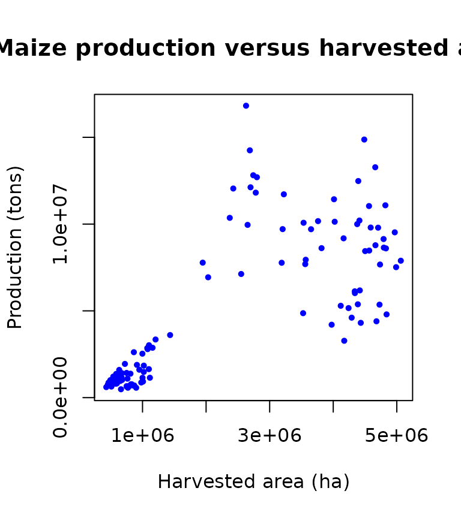
This adds on to the approach in Chunk 40. We use the “pch” argument to change the type of symbol, “cex” changes the size of the symbol, “col” the color of the symbol, and “main”, “xlab”, and “ylab” add titles for the top of the plot and the X and Y axis, respectively.
Looking at th plot, we can see there is a clear positive relationship in the data up to about 3 million ha planted area, and then production seems to decline. What’s going on there?
# Chunk 42b
# #1
zmb_maize <- crop_ylds %>% filter(crop == "maize" & country == "ZMB")
zaf_maize <- crop_ylds %>% filter(crop == "maize" & country == "ZAF")
# #2
plot(prod ~ harv_area, data = zmb_maize,
pch = 16, cex = 0.7, col = "blue",
main = "Zambia maize prod vs harv area",
xlab = "Harvested area (ha)",
ylab = "Production (tons)")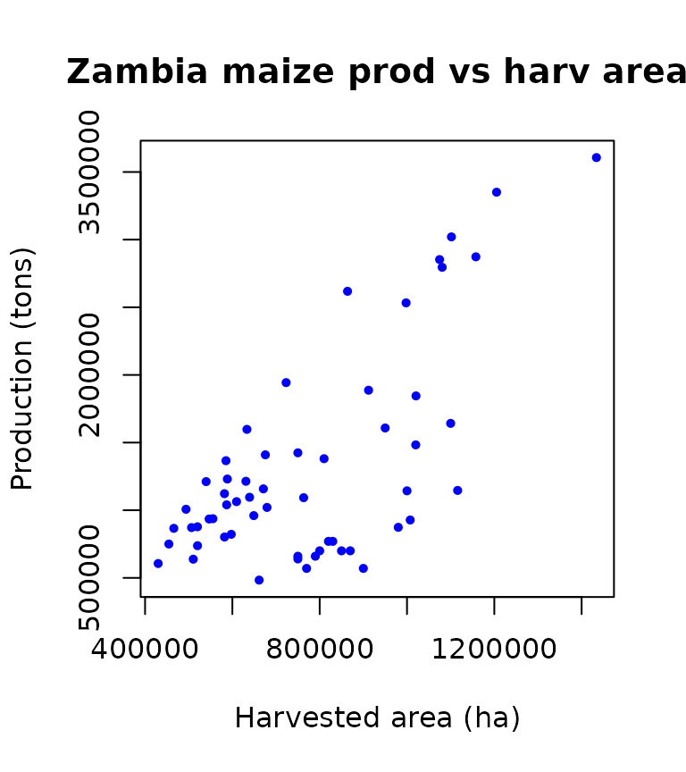
# #3
plot(prod ~ harv_area, data = zaf_maize,
pch = 16, cex = 0.7, col = "red",
main = "South Africa maize prod vs harv area",
xlab = "Harvested area (ha)",
ylab = "Production (tons)")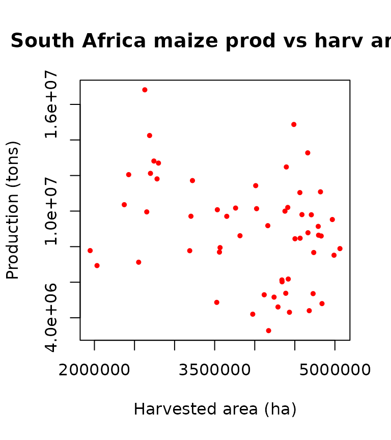
The difference is caused by different production/harvested area
patterns in the two countries in the dataset. In the examples above, we
separately plot each country’s maize dataset, using
dplyr::filter to create two new subsets of the data, which
we feed separately to two new plot chunks, changing the
title and point color in each. This makes the reason for the original
pattern (in Chunk 41) clearer, but is still not ideal. Better to put
both on one plot:
# Chunk 43
# #1
xl <- crop_ylds %>% filter(crop == "maize") %>% pull(harv_area) %>% range()
yl <- crop_ylds %>% filter(crop == "maize") %>% pull(prod) %>% range()
# #2
plot(prod ~ harv_area, data = zmb_maize,
pch = 16, cex = 0.7, col = "blue", xlim = xl, ylim = yl,
main = "Maize production vs harvested area",
xlab = "Harvested area (ha)",
ylab = "Production (tons)")
# #3
points(prod ~ harv_area, data = zaf_maize, pch = 16, cex = 0.7, col = "red")
# #4
legend(x = "topleft", legend = c("Zambia", "South Africa"),
col = c("blue", "red"), pch = 20)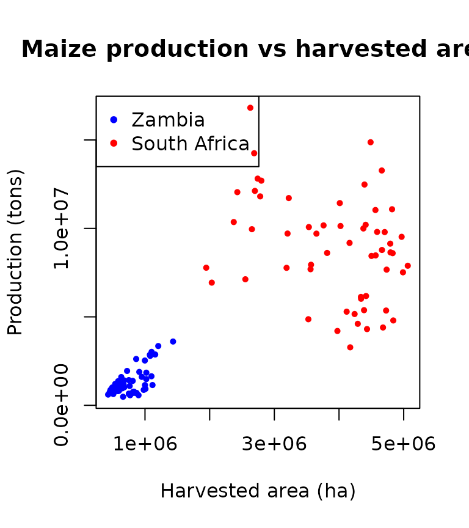
That’s much clearer now, and the plot now makes obvious some additional information: 1) South Africa’s harvested area of maize is much larger than Zambia’s, 2) it’s production declined with harvested area (???), 3) Zambia’s production and harvested area is much smaller but the two variables have a positive relationship.
Putting those variables on one plot took a few additional steps.
First, we had to make both datasets fit on the same scale. That required
fixing the data ranges on the X and Y axis of the plot.
plot would otherwise automatically set the range to max the
first input dataset (Zambian maize). So (in #1) we first figured out the
X and Y ranges by using dplyr’s filter, and
pull to extract the harv_area and prod
vectors and separately calculate their ranges into new variables
(xl and yl). We then (in #2) passed these in
to plot to set the “xlim” and “ylim” values (controlling
the range of the X and Y axes, respectively). plot was
applied to the zmb_maize. We then used points
(in #3) to add the zaf_maize data to the existing plot.
points does what it’s name says–it adds points to a plot.
An existing plot must already be established for points to
work. The arguments are the same as those used in plot.
Finally, in #4, we add a legend so that the reader can distinguish
between the two sets of points. The “x” argument says where the legend
should be placed in the graph, “legend” asks the legend text, “col” for
the point colors, and “pch” for what the point types should be.
That was a fair bit of work. Could we save some effort with
dplyr piping?
# Chunk 44
crop_ylds %>% filter(crop == "maize" & country == "ZMB") %>%
plot(prod ~ harv_area, data = .,
pch = 16, cex = 0.7, col = "blue", xlim = xl, ylim = yl,
main = "Maize production vs harvested area",
xlab = "Harvested area (ha)",
ylab = "Production (tons)")
crop_ylds %>% filter(crop == "maize" & country == "ZAF") %>%
points(prod ~ harv_area, data = ., pch = 16, cex = 0.7, col = "red")
legend(x = "topleft", legend = c("Zambia", "South Africa"),
col = c("blue", "red"), pch = 20)
A little bit, it seems. We can subset the dataset using
filter, and then pipe each subset to plot and
points, respectively. To do this, we give . to
the “data” argument in each function in order to receive the piped
dataset.
That’s not in ideal pipeline example, however, because
dplyr pipes are really more designed to work with the
tidyverse’s plotting tools, i.e. ggplot2.
Introducing ggplot2
Now’s a good time to introduce ggplot2. Let’s recreate
the first graph as a start:
# Chunk 45
library(ggplot2)
crop_ylds %>% filter(crop == "maize") %>%
ggplot() + geom_point(mapping = aes(x = harv_area, y = prod), col = "blue") +
xlab("Harvested area (ha)") + ylab("Production (tons)") +
ggtitle("Maize production vs harvested area")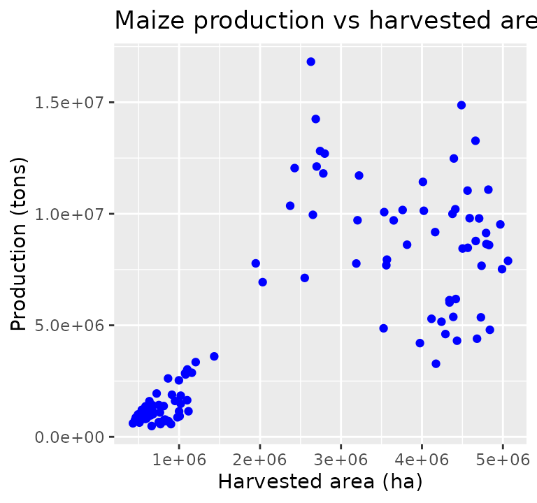
That’s a basic recreation of the same plot, although
ggplot by default has a grey gridded background (which can
be removed if needed). You can see that the syntax is very
different than it is with plot. ggplot is
based on a “grammar of graphics”, on which there a whole
book, but also a paper by
Hadley Wickham. There is a lot of information there, but some text from
ggplot2 tidyverse
page is instructive:
ggplot2 is a system for declaratively creating graphics, based on The Grammar of Graphics. You provide the data, tell ggplot2 how to map variables to aesthetics, what graphical primitives to use, and it takes care of the details…It’s hard to succinctly describe how ggplot2 works because it embodies a deep philosophy of visualisation. However, in most cases you start with ggplot(), supply a dataset and aesthetic mapping (with aes()). You then add on layers (like geom_point() or geom_histogram()), scales (like scale_colour_brewer()), faceting specifications (like facet_wrap()) and coordinate systems (like coord_flip()).
There are many functions in ggplot2 (the package) that
control plotting functionality, and we won’t go through them all here
(the cheatsheet
is a nice resource though). So we will go over just a few core parts,
using the example in Chunk 45. We initiated the whole thing from a
dplyr pipeline that we used to subset the maize part of
crop_ylds, which we piped to ggplot, which
(according to ?ggplot) “intializes a ggplot object”. It is
empty in this case because it is receiving the piped input, otherwise we
would to give a data.frame (let’s note there that
ggplot only works with data.frames, unlike
plot, which can work with vectors).
We then pass that to geom_point, using +,
which is somewhat analogous to dplyr’s %>%,
but in this case is used to build up ggplot objects.
geom_point is the geometry function for creating
scatterplots. There are many different geom_* functions in
ggplot2, one for each kind of plot. We’ll see more of those
later.
Inside geom_point we use the function aes
to satisfy the “mapping” argument. Is stands for “aesthetic mapping”,
which “…describe how variables in the data are mapped to visual
properties (aesthetics) of geoms.” (from ?aes).
xlab, ylab, and ggtitle should be
fairly self-explanatory.
An alternate was of constructing the same plot is this:
# Chunk 46
ggplot(data = crop_ylds %>% filter(crop == "maize"),
mapping = aes(x = harv_area, y = prod)) +
geom_point(col = "blue") + xlab("Harvested area (ha)") +
ylab("Production (tons)") + ggtitle("Maize production vs harvested area")That is not run, to save space, but is identical. In this case,
insert the tibble directly into ggplot’s
“data” argument, and the aes is supplied to the “mapping”
argument. We still need to supply the geom_point argument,
but now we just tell what point color we want (“col” argument). The rest
is the same.
So the above examples just show ggplot with
prod versus harv across both countries. How would we
distinguish between the countries, as we did in Chunks 43 and 44? By
making just two small changes to the code we used in Chunk 45 (same
would apply to Chunk 46)
# Chunk 47
crop_ylds %>% filter(crop == "maize") %>%
ggplot() + geom_point(aes(x = harv_area, y = prod, color = country)) +
xlab("Harvested area (ha)") + ylab("Production (tons)") +
ggtitle("Maize production vs harvested area")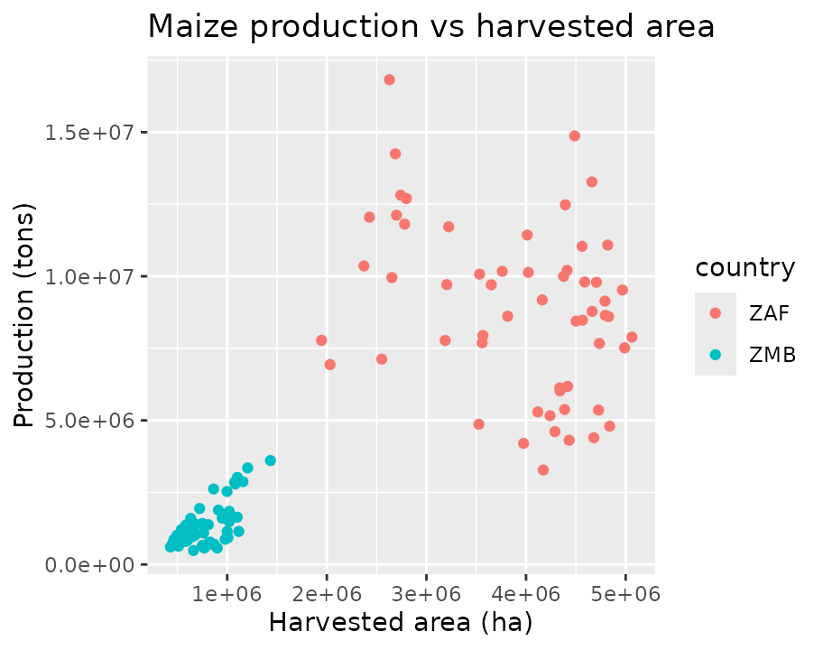
All we did here was supply the “color” argument inside
aes, which in this case is the country variable.
This means that geom_point (note we drop the argument name
for “mapping” now, which is fine) will assign a different color to each
group of points based on their unique values in country
variable. It then very conveniently 1) creates a legend, and 2)
automatically scales the axes to cover the full data ranges, and, of
course, 3) assigns a different color to each point grouping. The other
change we made was to remove the “col” argument that was originally
outside aes in Chunk 45, which assigned a single color to
all points. That’s a key point to remember: “color” (or “colour”–you
have probably already noticed that some tidyverse functions have
variants for both UK and US English spellings) is supplied inside
aes to create differentiated colors, while col
is used outside, and will map a single color.
I don’t much care for ggplot default color palette, so I
like to change them:
# Chunk 48
crop_ylds %>% filter(crop == "maize") %>%
ggplot() + geom_point(aes(x = harv_area, y = prod, color = country)) +
scale_color_manual(values = c("red", "blue")) +
xlab("Harvested area (ha)") + ylab("Production (tons)") +
ggtitle("Maize production vs harvested area")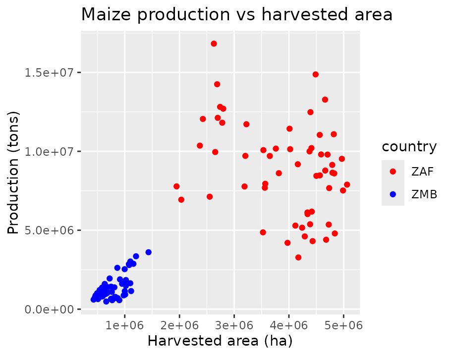
Which in this case is done using scale_color_manual and
the vector of color names pssed to “values”.
Line plots
Right, those are some very basic scatter plots we just looked at, and what they are showing is that maize production and harvested area have differing relationships between countries. Let’s explore this some more, and look at some acquire some new plotting skills in the process.
Remembering that yield production/harvested area (tons/ha), and the data we are examining are a time series, we might get a better sense of the data by plotting yield over time:
# Chunk 49
crop_ylds %>% filter(crop == "maize") %>%
ggplot() + geom_point(aes(x = year, y = yield, color = country)) +
scale_color_manual(values = c("red", "blue")) +
xlab("Year") + ylab("Yield (tons / ha)") +
ggtitle("Maize yield (1961-2017)")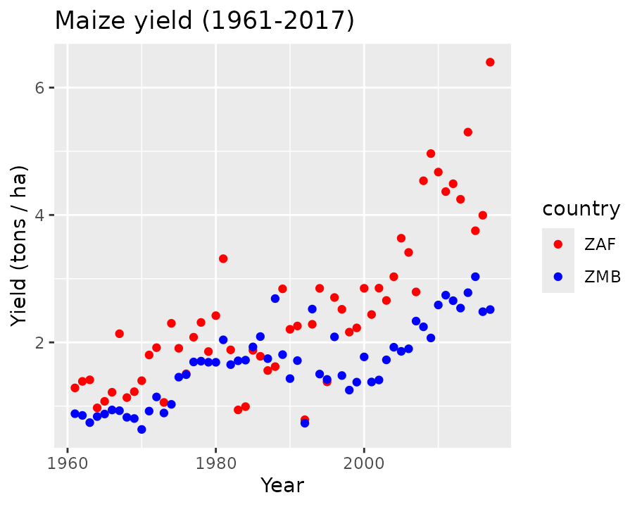
Interesting. It seems that both countries show an increasing trend in yield since 1961, with a more rapid increase after 2000, particularly in South Africa. But the point are noisy, so maybe visualizing these as lines would make things a clearer?
# Chunk 50
crop_ylds %>% filter(crop == "maize") %>%
ggplot() + geom_line(mapping = aes(x = year, y = yield, color = country)) +
scale_color_manual(values = c("red", "blue")) +
xlab("Year") + ylab("Yield (tons / ha)") +
ggtitle("Maize yields (1961-2017)")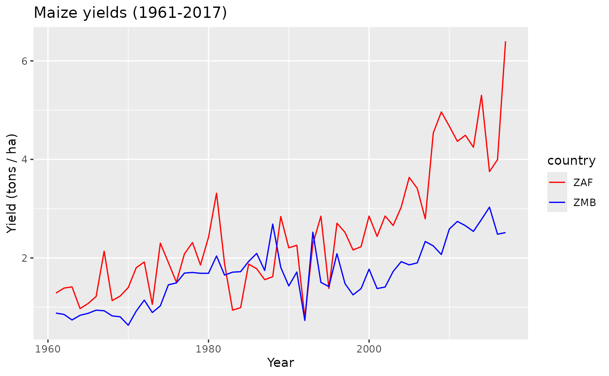
That does make things a bit clearer–and it suggests that South
African yields diverged from Zambian yields in about the mid-1990s. The
lines also better illustrate the between-year variations in yields,
which seem to be larger in South Africa than Zambia. All we had to do to
make the change was swap out geom_point for
geom_line.
For comparison, here is how we would do that same plot with
graphics methods:
# Chunk 51
crop_ylds %>% filter(crop == "maize" & country == "ZMB") %>%
plot(yield ~ year, data = ., type = "l", col = "blue",
ylim = range(crop_ylds %>% filter(crop == "maize") %>% pull(yield)),
main = "Maize yield (1961-2017)")
crop_ylds %>% filter(crop == "maize" & country == "ZAF") %>%
lines(yield ~ year, data = ., col = "red")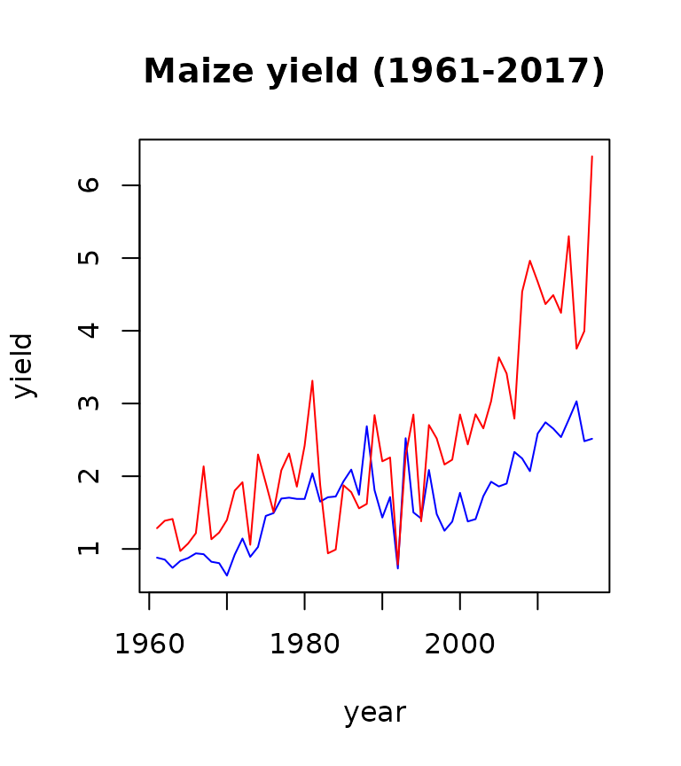
Pretty much the same set-up as Chunk 44, using the
type = "l" argument in plot to plot lines
instead of points for the Zambian maize yields, and then the
lines function (instead of points) to add the
South African yield time series.
Points and lines
Those line comparisons still only give us a visual comparison.
Fitting a trend line to the points would make things clearer. We can do
that quite easily with ggplot:
# Chunk 52
crop_ylds %>% filter(crop == "maize") %>%
ggplot() + geom_point(aes(x = year, y = yield, color = country)) +
geom_smooth(aes(x = year, y = yield, color = country)) +
scale_color_manual(values = c("red", "blue")) +
xlab("Year") + ylab("Yield (tons / ha)") +
ggtitle("Maize yields (1961-2017)")
#> `geom_smooth()` using method = 'loess' and formula = 'y ~ x'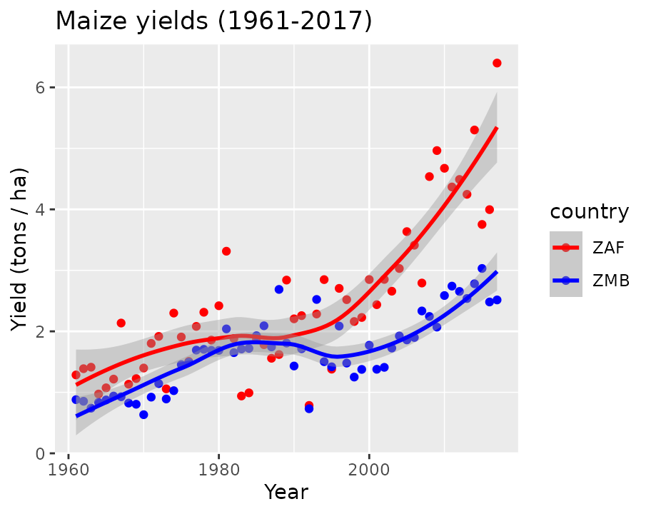
The above uses geom_smooth to add a best-fitting curve
through each country’s yield time series. This function defaults to
loess, which fits a smoothing spline, or local polynomial
regression, to the points (see ?loess for more details). It
also provides a confidence interval around that fit. This now shows the
steeper yield increase in South Africa starting just before 2000.
We can also just examine the linear (rather than curvilinear) trends:
# Chunk 53
crop_ylds %>% filter(crop == "maize") %>%
ggplot() + geom_point(aes(x = year, y = yield, color = country)) +
geom_smooth(aes(x = year, y = yield, color = country), method = "lm") +
scale_color_manual(values = c("red", "blue")) +
xlab("Year") + ylab("Yield (tons / ha)") +
ggtitle("Maize yield (1961-2017)")
#> `geom_smooth()` using formula = 'y ~ x'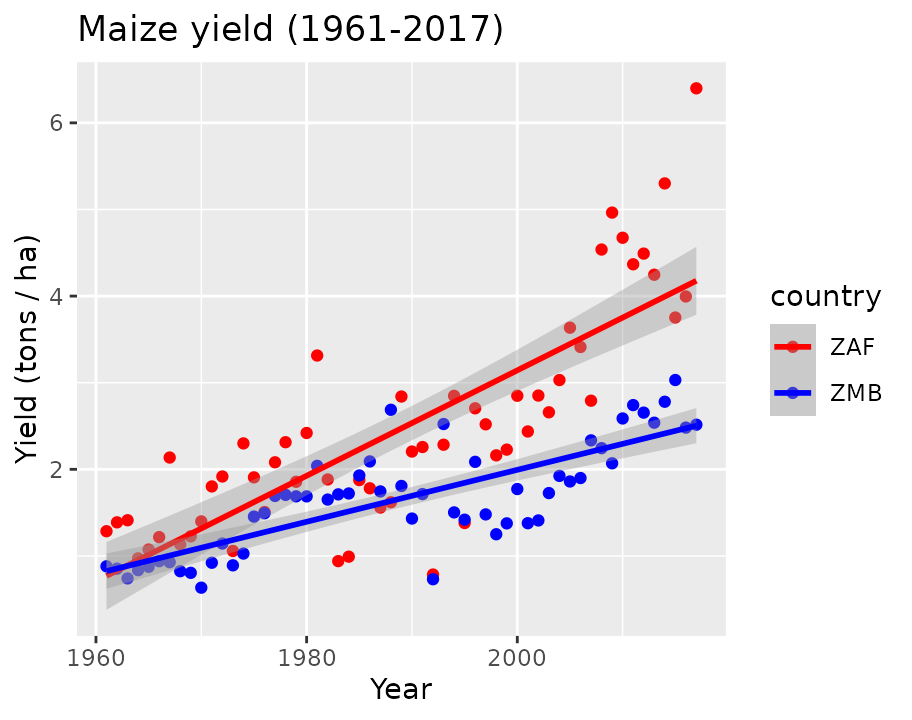
That gives us a straight line fit through each time series, which is
calling on the lm function to fit the trendlines, which
shows a steeper line over the whole time series.
With graphics::plot, we have to fit the trendlines more
explicitly:
# Chunk 54
zmb_maize <- crop_ylds %>% filter(crop == "maize" & country == "ZMB")
zaf_maize <- crop_ylds %>% filter(crop == "maize" & country == "ZAF")
yl <- range(crop_ylds[crop_ylds$crop == "maize", "yield"])
plot(yield ~ year, data = zmb_maize, pch = 16, col = "blue",
ylim = yl, main = "Maize yield (1961-2017)")
abline(lm(yield ~ year, data = zmb_maize), col = "blue")
points(yield ~ year, data = zaf_maize, pch = 16, col = "red")
abline(lm(yield ~ year, data = zaf_maize), col = "red")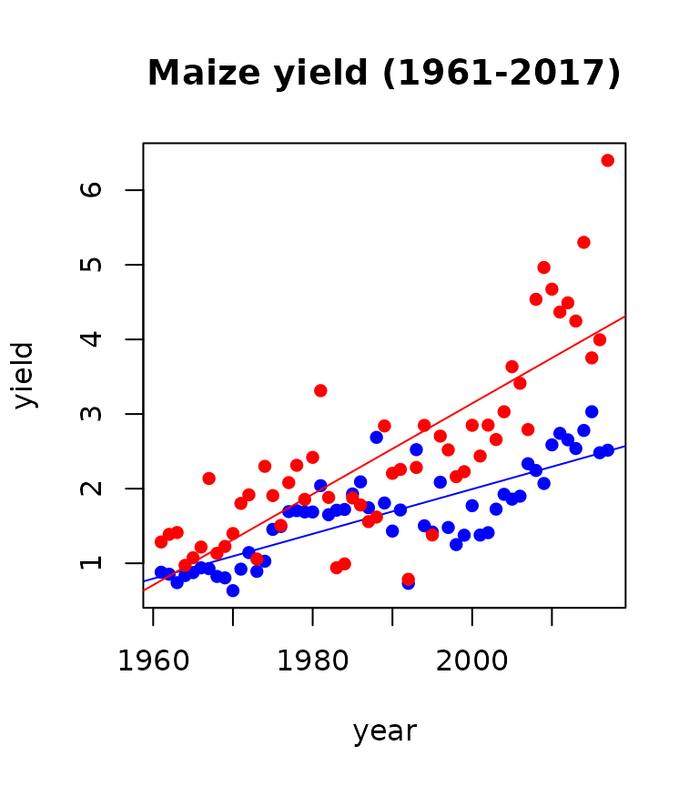
We recreate the two subset tibbles
zmb_maize and zaf_maize, create a new variable
yl containing the range of yields across both datasets,
plot points for zmb_maize, and use lm to fit
the regression between yield and year in
zmb_maize, then wrap that in the abline
function, which converts the regression model to a prediction line
(i.e. the trendline). We then points with
zaf_maize to add the scatter plot for South African maize,
and fit another abline on the lm for that
dataset. That’s more involved than the ggplot approach.
One-dimensional plots
We have been looking at plots using two variables so far. Now let’s
look at some of the more commonly used visualizations for single
variables. Let’s start with a histogram of sorghum yields, starting
first with ggplot:
# Chunk 55
crop_ylds %>% filter(crop == "sorghum") %>%
ggplot() + geom_histogram(aes(x = yield), fill = "blue", col = "black") +
ggtitle("Distribution of sorghum yields")
#> `stat_bin()` using `bins = 30`. Pick better value `binwidth`.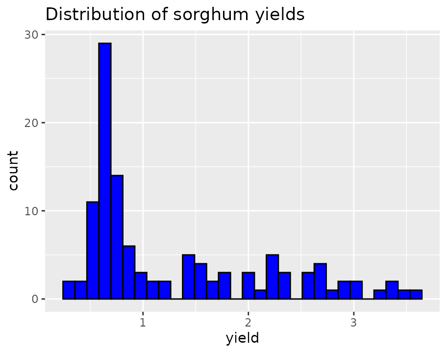
We grab sorghum out of crop_ylds, and then
geom_histogram with an aes mapping
yield to the x variable. We specify the color for the histogram
bar “fill” and the bar outline color (“col”) outside of
aes. The output suggests that we suggest a better bin
width. Indeed, the bars are too narrow and there are data gaps. Let’s
try again with a different number of bins:
# Chunk 56
crop_ylds %>% filter(crop == "sorghum") %>%
ggplot() +
geom_histogram(aes(x = yield), bins = 15, fill = "blue", col = "black") +
ggtitle("Distribution of sorghum yields")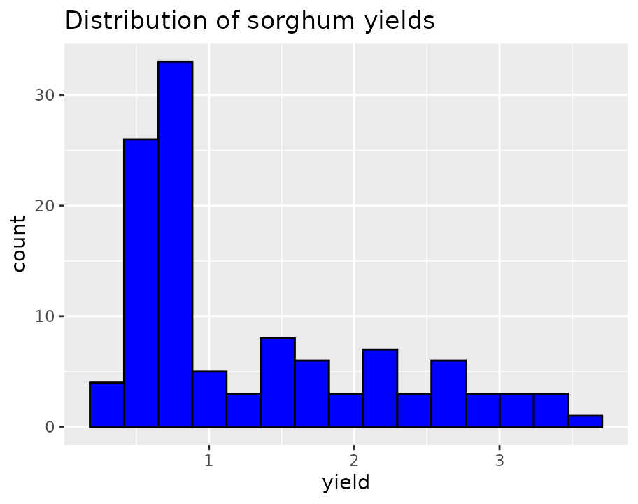
We specify that we want 15 bins, rather than the default 30. Looks a
bit better. Here’s how do it using graphics::hist:
# Chunk 57
hist(x = crop_ylds$yield[crop_ylds$crop == "sorghum"], xlab = "yield",
main = "Distribution of sorghum yields", col = "blue")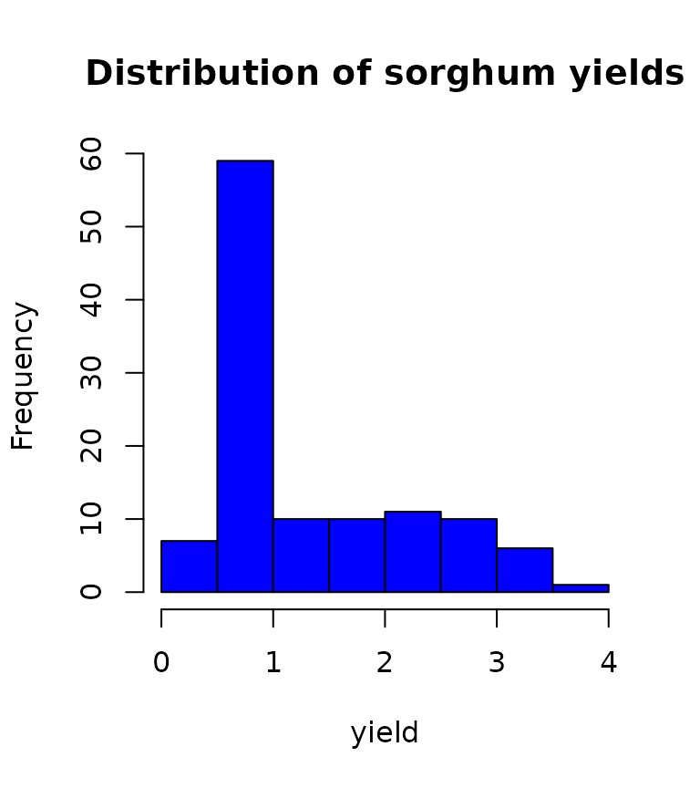
We’ll keep focusing on ggplot though. How about a
histogram breaking sorghum yields down by country?
# Chunk 58
crop_ylds %>% filter(crop == "sorghum") %>%
ggplot() +
geom_histogram(aes(x = yield, color = country), bins = 15) +
ggtitle("Distribution of sorghum yields")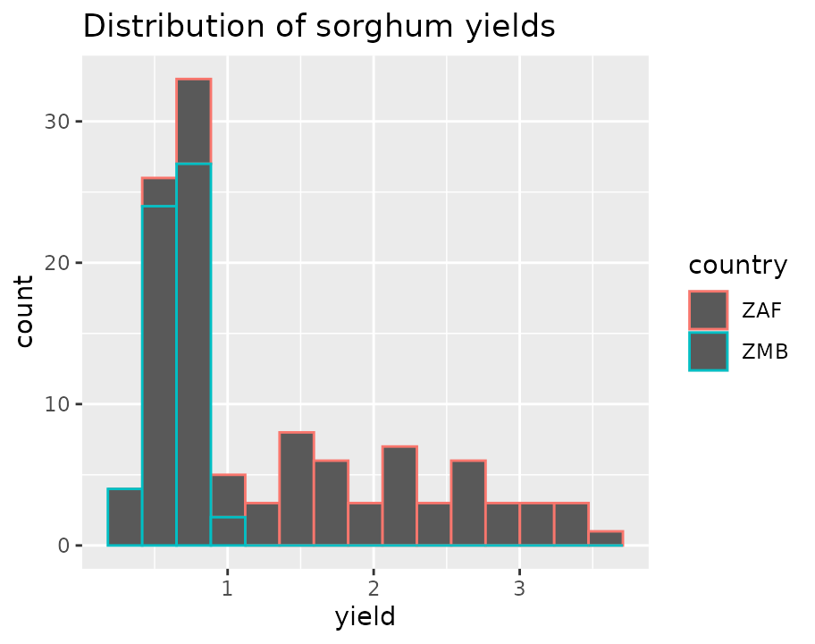
As with scatter plots, specifying the “color” argument within
aes separates the bars by country, making stacked
histograms. What about changing the fill, rather than the bar outline
color?
# Chunk 59
crop_ylds %>% filter(crop == "sorghum") %>%
ggplot() +
geom_histogram(aes(x = yield, fill = country), bins = 15) +
ggtitle("Distribution of sorghum yields") +
scale_fill_manual(values = c("red", "blue")) 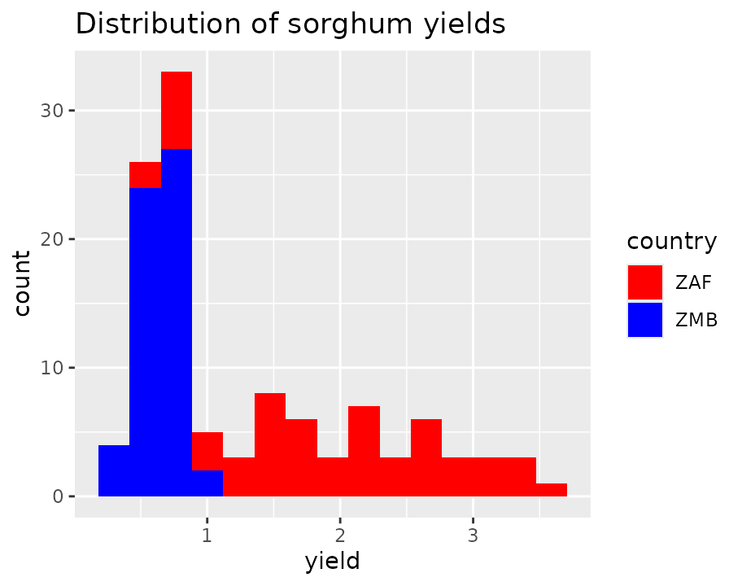
We specify that fill = country in aes.
Okay, so now it is clear that in polygonal object, we distinguish
between “fill” and “color” within aes (or “fill” and “col”
outside of it). And if we want to change the fill colors from
ggplot’s defaults, as we did with scatter plots above, we
use the scale_fill_manual function.
We could also make this a side-by-side histogram, rather than a stacked one:
# Chunk 60
crop_ylds %>% filter(crop == "sorghum") %>%
ggplot() +
geom_histogram(aes(x = yield, fill = country), bins = 15,
position = "dodge", col = "black") +
ggtitle("Distribution of sorghum yields") +
scale_fill_manual(values = c("red", "blue")) 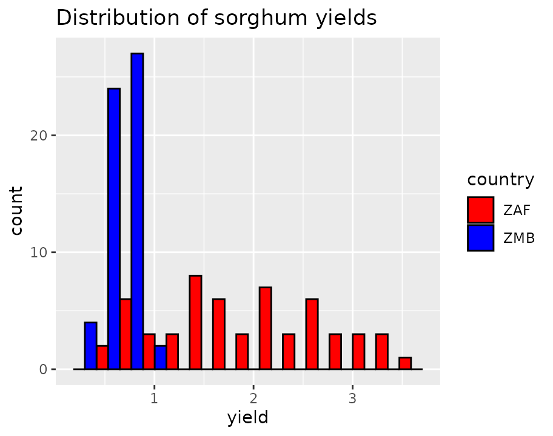
We achieve that by using the argument position = "dodge"
(outside of aes). We also use col = "black"
outside of aes to add a black line around each box.
So those are histograms. How about a simpler barplot for counting a categorical variable?
# Chunk 62
crop_ylds %>% filter(crop == "wheat") %>%
mutate(yld_levels = ifelse(yield < 3, 1, 2)) %>%
mutate(yld_levels = ifelse(yield > 6, 3, yld_levels)) %>%
ggplot() + geom_bar(aes(x = yld_levels), fill = "blue", col = "black") +
xlab("Yield levels")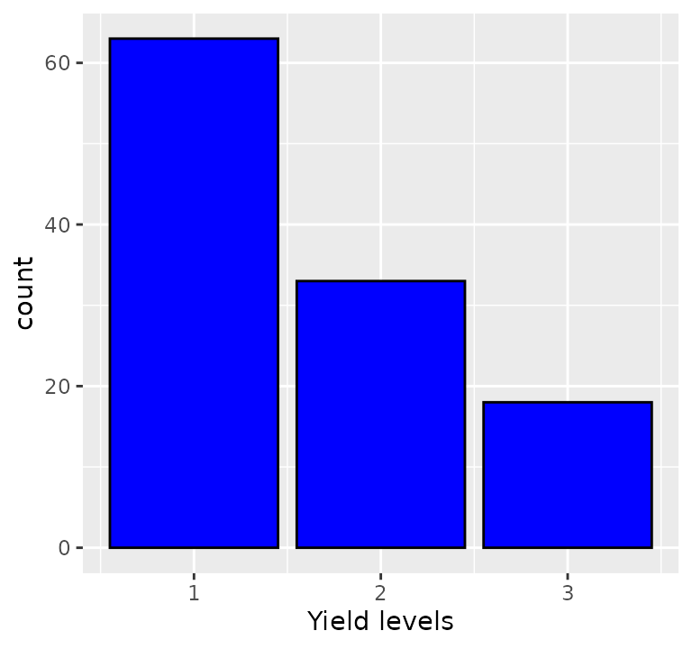
Here we use geom_bar to make a bar plot from the
categorical variable yld_levels, which we create using
mutate and ifelse to group wheat yields into 3
categories (yield < 3 t/ha; 3-6 t/ha; >6 t/ha). We make the bars
blue-filled and outlined with black box.
Last plot we will show is the boxplot:
# Chunk 63
crop_ylds %>% ggplot() + geom_boxplot(aes(x = crop, y = yield)) + xlab(NULL)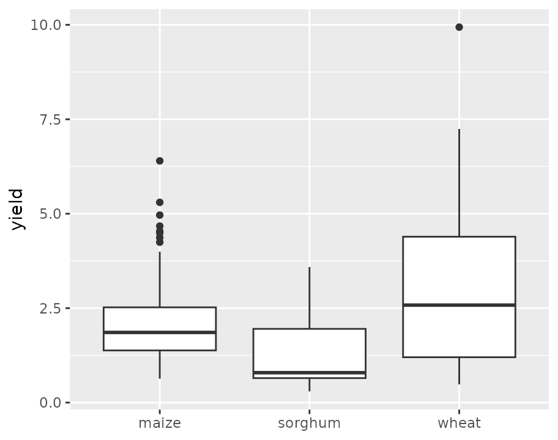
Pretty straightforward. We get a separate boxplot for each crop by specifying crop as the “x” argument and yield as “y” inaes within geom_boxplot. Another way to
show the distribution of values within a variable. We can also easily
distinguish separate boxplots for each country:
# Chunk 64
crop_ylds %>%
ggplot() + geom_boxplot(aes(x = crop, y = yield, fill = country)) +
xlab(NULL) + scale_fill_manual(values = c("red", "blue")) 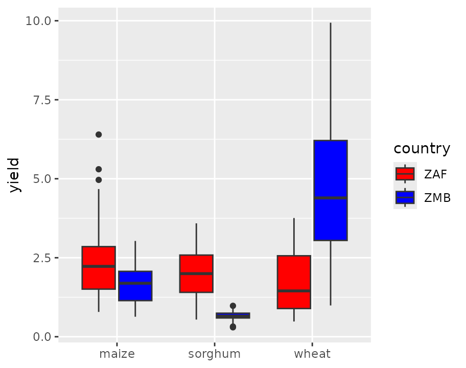
We simply make country the variable on which to “fill” in
aes, and then change the fill color to red and blue.
Multi-panel plots
Thinking back to our scatter plots, there is more to the story regarding the differing yield trends between South Africa and Zambia, and it requires multiple plots to really tell it. Let’s have a look at yield, production, and harvested area trends over time to see what’s going on:
# Chunk 65
# #1
p1 <- crop_ylds %>% filter(crop == "maize") %>%
ggplot() + geom_point(aes(x = year, y = yield, color = country)) +
scale_color_manual(values = c("red", "blue")) +
ylab("Yield (tons/ha)") + xlab("") +
geom_smooth(aes(x = year, y = yield, color = country))
p2 <- crop_ylds %>% filter(crop == "maize") %>%
ggplot() + geom_point(aes(x = year, y = prod, color = country)) +
scale_color_manual(values = c("red", "blue")) +
ylab("Production (tons)") + xlab("") +
geom_smooth(aes(x = year, y = prod, color = country))
p3 <- crop_ylds %>% filter(crop == "maize") %>%
ggplot() + geom_point(aes(x = year, y = harv_area, color = country)) +
scale_color_manual(values = c("red", "blue")) +
ylab("Harvested area (ha)") + xlab("") +
geom_smooth(aes(x = year, y = harv_area, color = country))
# #2
gp <- cowplot::plot_grid(p1 + theme(legend.position = "none"),
p2 + theme(legend.position = "none"),
p3 + theme(legend.position = "none"), nrow = 1,
align = "vh", axis = "l")
# #3
gp2 <- cowplot::plot_grid(gp, cowplot::get_legend(p1), rel_widths = c(3, 0.3))
# #4
ggsave(gp2, filename = "vignettes/fig/u1m4-1.png", width = 9, height = 2.5,
units = "in", dpi = 300)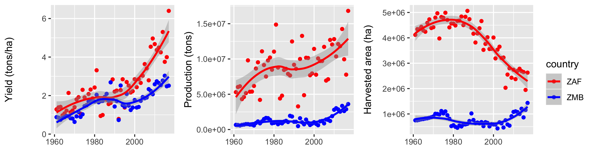
This is a bit more advanced, but worth having a look at. In #1, we
replicate our code from Chunk 52, using aes() with the
“color” argument to create separate plots by country. We create
one ggplot object for each variable yield,
prod, and harv_area. We assign each plot to its own
object, which prevents it from printing to the graphics device.
In #2, we use the function plot_grid from the
cow_plot package to arrange the three plots into a single
plot. We specify that the plots will fall onto one row
(nrow = 1), and that it should align the three plots
vertically and horizontally (align = "vh") against the left
axis (axis = "l"). We use an additional argument assigned
to each plot object, which tells the plot to render without its legend
(theme(legend.position = "none")). That is done to prevent
three identical legends being created, one for each plot, which would
take up valuable plot real estate.
In #3, we use cowplot::plot_grid again, putting the
three panel plot object as the first argument, and then use a function
to grab the legend from one of the individual plots
(cowplot::get_legend(p1)), which will make it appear to the
right of the three scatter plots. rel_widths(c(3, 0.3)
specifies the relative width of each plot in the row, so the legend will
take <10% of the total plot space (0.3 / (3 + 0.3)).
In #4 we use ggsave to write the whole plot to a png,
which we then read back in to display within the vignette (see the Rmd
code). The reason for that is to avoid making geospaar
dependent on cowplot to build vignettes. So to run this
code you will have to install.packages(cowplot).
So what is the story told by this plot? The most interesting feature is the steep dive in South Africa’s maize harvested area beginning around 1990. At the same time, production increased substantially. Those two factors combine to create yield gains that were much larger than Zambia’s. The story behind this story is that South Africa heavily subsidized maize production until the 1990s, which encouraged planting in more climatically marginal areas. Following removal of the subsidies, maize farming contracted into more climatically suitable areas, while smaller and less efficient farmers dropped out. The net result was that South Africa has ended up growing more maize on less land, unlike Zambia, which increased its yields but also expanded its harvested area.
We just showed a more complicated way of making a multi-panel plot.
There is a simpler way to do this with ggplot2 functions,
provided that the variables on your two axes don’t change between plot
panels. We can illustrate this by showing the yield time series
for each crop:
# Chunk 66
crop_ylds %>%
ggplot(.) + geom_point(aes(x = year, y = yield, color = country)) +
geom_smooth(aes(x = year, y = yield, color = country)) +
facet_grid(cols = vars(crop)) +
scale_color_manual(values = c("red", "blue")) +
ylab("Yield (tons/ha)") + xlab("")
#> `geom_smooth()` using method = 'loess' and formula = 'y ~ x'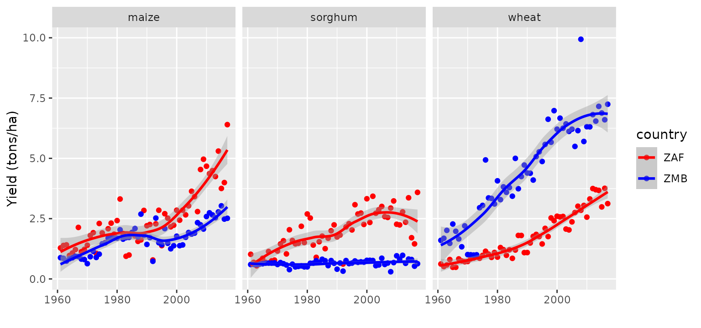
In this example, we use ggplot2::facet_grid to split the
output into three plots, one per crop type, specifying that we want the
values in vars(crop) to split into columns. For
facet_grid, you have to wrap the column name in
vars().
We can also specify that by rows:
# Chunk 67
crop_ylds %>%
ggplot() + geom_point(aes(x = year, y = yield, color = country)) +
geom_smooth(aes(x = year, y = yield, color = country)) +
facet_grid(rows = vars(crop)) +
scale_color_manual(values = c("red", "blue")) +
ylab("Yield (tons/ha)") + xlab("")
#> `geom_smooth()` using method = 'loess' and formula = 'y ~ x'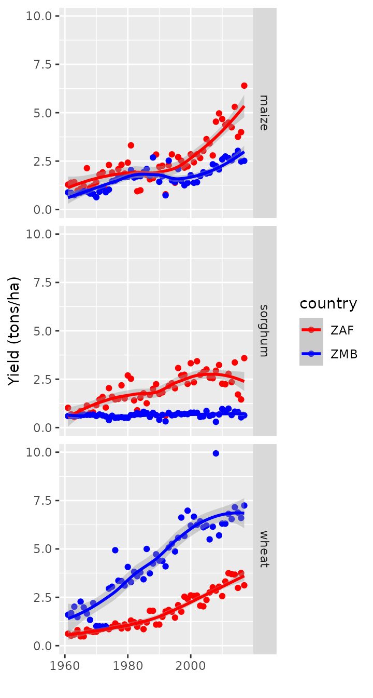
So that’s it for our visualization section. There are many other graphics we could make, and we will learn some of these as we continue into the spatial unit of the course.
Practice
Questions
What are some of the primary differences between plots made using the
graphicspackage and those made withggplot2?ggplot2seems much prettier and maybe more convenient. So why are we learning about basegraphicsplots as well?How do the axis labels in the two examples given in Chunk 41 differ from the plot in Chunk 40? How could you change the names of the labels?
You can use
graphics::plotwithdplyrpipelines. In order for it to work, what argument and argument value do you have to do to use?How do you change the point color, point style, and point size in a
graphics::plot?What happens when you run
ggplotwithout ageom_*argument? You can run the code in Chunk 45 with thegeom_pointpart removed to check.
Code
Run the code in Chunk 56 without the “fill” and “col” arguments. Then run it, with just
fill = "red"(no “col” argument).Using
crop_ylds, split out the South Africa wheat data (withdplyr) and useplotto make a time series between year and harv_area, using first points and then lines (hint: use thetype = "l"argument for lines). Make the points solid blue and the lines blue. Give a title “South Africa Wheat (1961-2017)”, and make the axis labels empty for the year axis and “Harvested area (ha)” for the y axis.Recreate the same two plots (labels, title, colors) using
ggplot’sgeom_pointand thengeom_line.Building on the previous, create a
ggplotthat separates the harv_area trends by country. Usegeom_lineto show the two trends. Change the defaultggplotcolors to blue for Zambia and red for South Africa (i.e. usescale_fill_manual). Extra: You will see that the Zambia harv_area values are small relative to South Africa’s, so it is hard to see how they change over time. Wrap thelog10()function around harv_area inaes, and replot for a more informative visualization.Plot just the South Africa wheat time series, but use
geom_pointsandgeom_smoothto plot the point with a smooth trend through it. In other words, use the code you used for the first part of code practice 3 above, but addgeom_smooth.Create a histogram from Zambia’s wheat planted area. Do it using both
ggplot2andgraphics::histmethods. Add titles and informative x axis labels to both. Make the bars blue with black outlines.Let’s display wheat, sorghum, and maize harvested areas for South Africa on side-by-side scatter plots, each with a smooth trendline fit through it. That requires adapting Chunk 66’s code. Hints: leave out
color = countryingeom_pointsandgeom_smooth, and usedplyrto filter for South African data.
Unit assignment
Set-up
Make sure you are working in the master branch of your project (you should not be working on the a2 or a3 branch). Create a new vignette named “module4.Rmd”. You will use this to document the tasks you undertake for this assignment.
There are no package functions to create for this assignment. All work is to be done in the vignette.
Vignette tasks
- Create three
tibbles,t1,t2,t3.t1has 10 rows, with columnV1containing values G1 through G10, andV2containingrunifbetween 75 and 125.t2has 15 rows withv1(G1 - G15) andv3containing a random selection ofLETTERSA-F.t3has 20 rows (v1with G1-G20), andv4with numbers from the random normal distribution (mean= 100,sd= 20). Use a seed of 1 for random numbers. Joint1,t2, andt3within a single pipeline, using:
left_joinright_joinfull_joininner_join
Recreate the
crop_yldsdataset, using 1) anlapplyto read in each .csv file from the packageextdata/folder, and 2) thedplyrsteps necessary to*_jointhe data and make the necessarymutate-ations. Chunks 1, 11, 16, 19, and 21 are your guides.Use
dplyrverbs to select the 5 top-ranked years for total harvested area for South African maize. Do the same for South African maize yields. To do this, you will need to usefilter,arrange, andslice. The outputs for each test should be the 5 rows ofcrop_yldsthat meet these criteria.Calculate the mean of each crop’s yield (across both countries) using SAC based on
dplyr, as well as ansapplyusing baseRsyntax within thesapplyto subset on crop (note, subsetting a tibble is a bit different, so use this syntax to do the job within thesapply:mean(crop_ylds[crop_ylds$crop == x, ]$yield))Calculate a correlation matrix between harv_area and yield for each crop-country combination, using
dplyrverbs. Arrange the result (negative to positive) by the value of the correlation coefficient. See Chunk 34 for guidance.Create a single scatter plot with
ggplotthat shows the relationship between harv_area (x-axis) and yield (y-axis) for maize, separated by country on a single plot. Make it a point scatter plot, with a straight trendline fit through each set of points (i.e.method = "lm"). You will need to usegeom_pointandgeom_smooth. Make a title (“Harvested area versus yield”) and x (“Harvested area (ha)”) and y (“Yield (t/ha)”) labels.Create a single scatter plot with
graphics::plotthat plots just South African wheat yields (y-axis) against year (x-axis). Plot the points, and then add a linear trendline to it, by wrapping theablinearound thelmfunction. Make the points solid grey (“grey”) and theablineblue. Label the y axis as “Yield (t/ha)”. Remove the x-axis label. Give a title: “South African wheat (1961-2017)”. Chunk 54 is your guide.Use
ggplotto make a 5-bin histogram of Zambia’s maize yields. The x-label should be “Yield (t/ha)”, the title should be “Zambian Maize”, and bins should be blue with black outlines.
Assignment output
Refer to Unit 1 Module 3’s Assignment output section for submission instructions. The only differences are as follows:
Your submission should be on a new side branch “a3”;
You should increment your package version number by 1 on the lowest number (e.g. from 0.0.1 to 0.0.2) in the DESCRIPTION;
-
Control the width of your plots in 6-8 using the following chunk options:
-
For all chunks, suppress messages and warnings by adding
message = FALSEandwarning = FALSEto the chunk options, e.g.